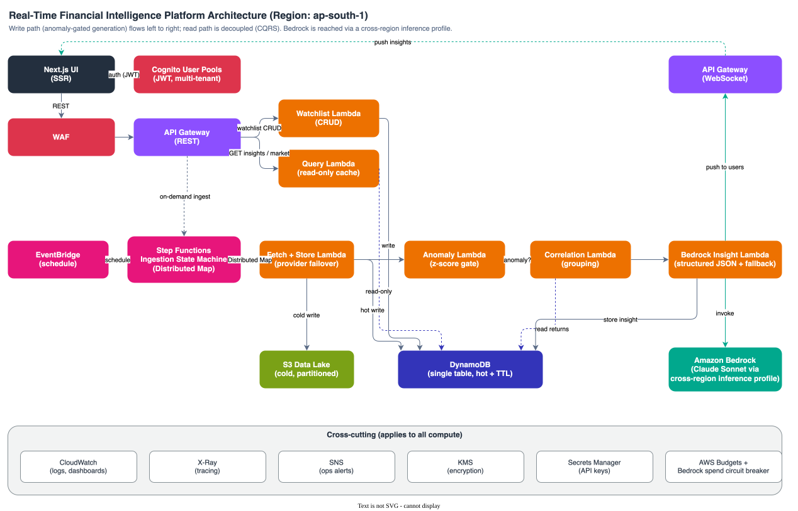

Code · Console · Concept
Learn the platform by following the data.
A practical companion for reading the Financial Intelligence Platform in code, AWS, and the design decisions that connect them.
Start here
Choose a learning route, then use the reference section below when you need the exact resource, class, or AWS console location.
Understand the whole system
Read the architecture overview, then follow one ticker from the schedule to a cached API response.
Debug a real issue
Start with the affected path: ingestion for missing data, query for API failures, and compliance for access or consent problems.
Make a safe change
Locate the owning stack, inspect its IAM boundary, then use the matching test and deployment evidence.
Architecture at a glance
- EventBridge
schedule - Step Functions
orchestrates - Distributed Map
fans out - Fetch Lambda
validates - DynamoDB + S3
store - Bedrock or rules
explain - API Gateway
serves

Repository examples
These examples are taken from the implementation, trimmed only to focus on the learning point. They show the operational conventions used throughout this repository.
1. A Lambda is a named function bean
Spring Cloud Function keeps the handler signature focused on the request and response. CDK selects the deployed bean through SPRING_CLOUD_FUNCTION_DEFINITION.
@Bean
public Function<MarketDataRequest, MarketDataResponse> fetchMarketData(
MarketDataFetchService fetchService,
AnomalyDetectionService anomalyService,
MarketDataStoreService storeService,
Clock clock) {
return request -> {
String ticker = TickerValidator.validate(request.ticker());
MarketDataResponse marketData = fetchService.fetch(ticker, request.correlationId());
marketData = anomalyService.evaluate(marketData, request.correlationId());
return storeService.store(marketData, request.correlationId());
};
}Use it when: you want business logic that can be exercised directly in unit/integration tests while Lambda supplies the event adapter.
2. Fan out safely instead of looping
The ingestion workflow treats each ticker as an independent item. Its bounded concurrency protects external providers and leaves headroom for the user-facing API.
DistributedMap fanOut = DistributedMap.Builder.create(this, "FanOutTickers")
.itemsPath("$.watchset.Items")
.maxConcurrency(2)
.toleratedFailurePercentage(100)
.build();Use it when: one item failing must not block the rest of a batch, and retries or DLQ handling need to be observable per item.
3. Validate at the boundary, then trust the system
A ticker is decoded before a strict allowlist check. This prevents malformed values from becoming DynamoDB keys, provider URLs, or log content.
private static final Pattern ALLOWED = Pattern.compile("^[A-Z0-9.^-]{1,15}$");
static String validated(String raw) {
String ticker = decode(raw);
if (ticker == null || !ALLOWED.matcher(ticker).matches()) {
throw new IllegalArgumentException("Invalid ticker: " + raw);
}
return ticker;
}Use it when: data crosses from HTTP or an external provider into internal identifiers. Validate once at that trust boundary; downstream code can use the typed, validated value.
4. Cache keys are part of authorization design
The user-scoped insight feed includes the authorization header in its API Gateway cache key, preventing one caller’s feed from being served to another.
.cacheKeyParameters(List.of("method.request.header.Authorization"))Use it when: a cached response depends on identity, tenant, locale, query parameters, or any other request value. Every response-shaping value belongs in the cache key.
Guided labs
Use these labs to turn a passive read into a traceable learning exercise. Start in development or LocalStack; do not use a production account for exploratory requests.
Lab 1. Trace one on-demand ticker refresh
- Choose a valid ticker such as
RELIANCE.NS. The boundary rule permits uppercase letters, digits, dots, carets, and hyphens only. - Call
POST /ingest/{ticker}with a valid premium or admin access token. The API starts the Step Functions execution; it does not call a Lambda synchronously. - In Step Functions, open the execution and follow the correlation ID through
ReadWatchset,FanOutTickers,FetchMarketData, and the insight branch. - Confirm the hot
TICKER#RELIANCE.NSdata in DynamoDB and the cold object in S3. Then queryGET /insights/RELIANCE.NS.
Expected behaviour: on-demand refreshes deliberately force the insight branch even if the z-score does not cross the scheduled-ingestion threshold. This is covered by IngestionHandlerTest#onDemandSourceForcesAnomalyWhenEvaluatorFoundNone.
Lab 2. Prove the read path is read-only
- Seed or generate two insights for one ticker with different ISO-8601 timestamps.
- Call
GET /insights/TCS.NSand inspect the response. - Read
InsightQueryIT#returnsLatestInsightForTickeralongside the DynamoDB query implementation.
Expected behaviour: the newest INSIGHT# sort key wins; no Bedrock call runs on this route. An empty result is represented as found: false, not as a failed pipeline.
Lab 3. Follow one compliance request
- Sign in, then read consent with
GET /user/consent. - Grant or withdraw consent through the matching route and verify that the authenticated user identity comes from authorizer context rather than the request body.
- Read
DsrBeanITto see the export and erasure cascade tested against LocalStack: user items are removed and audit records survive.
Expected behaviour: consent and data-subject requests are scoped to the caller’s Cognito sub. A user cannot select another subject through JSON input.
API and data examples
These are representative response shapes from the Java records. Values are illustrative; names and semantics match the implementation.
Read the latest insight
GET /insights/TCS.NS
Authorization: Bearer <access-token>
{
"ticker": "TCS.NS",
"generatedAt": "2026-06-30T10:00:00Z",
"signal": "BUY",
"confidence": 0.80,
"rationale": "strong momentum",
"drivers": ["volume", "price"],
"source": "RULE_BASED",
"insightText": "BUY signal",
"modelId": "rule-v1",
"found": true
}Interpretation: source makes the generation path explicit. A rule-based result is a valid, deterministic fallback—not an error or a hidden degraded state.
Add a watchlist entry
POST /watchlist/RELIANCE.NS
Authorization: Bearer <access-token>
{
"status": "added",
"ticker": "RELIANCE.NS",
"tickers": []
}Use case: adding a valid ticker updates the caller’s watchlist and the distinct WATCHSET union that scheduled ingestion reads. The authenticated owner is injected by API Gateway; the client never supplies it.
Failure paths worth learning
Invalid ticker
URL-decode first, then reject values outside the strict allowlist. This keeps malformed input out of provider URLs, DynamoDB keys, S3 tags, and logs.
Provider or Bedrock trouble
The write path can fail over between providers; Bedrock throttling, invalid structured output, or an open budget circuit produces a deterministic rule-based insight.
Concurrent erasure
A conditional deletion lease makes a duplicate request report in-progress instead of running a second cascade. A stale lease can be safely taken over.
When investigating, identify the boundary first: API input validation, workflow retry/DLQ, provider fallback, or durable audit record. This prevents treating an expected business outcome—such as found: false—as a system failure.
Code-to-proof map
| Learn this behaviour | Start in code | Read this proof |
|---|---|---|
| On-demand ingest forces an insight | IngestionHandler#fetchMarketData | IngestionHandlerTest#onDemandSourceForcesAnomalyWhenEvaluatorFoundNone |
| Newest stored insight is served | InsightQuery | InsightQueryIT#returnsLatestInsightForTicker |
| Stories remain deterministic | RuleBasedStoryComposer | RuleBasedStoryComposerTest |
| Consent and erasure respect subject boundaries | ConsentHandler, DsrHandler | DsrBeanIT |
| API cache keys isolate callers | QueryStack | QueryStackTest |
A useful habit: read the implementation, then its focused test, then the integration test. The three layers explain intent, local behaviour, and the AWS-shaped boundary respectively.
Learning Guide: Reading This Platform in Code, in the Console, and in Concept¶ ↑
You built this. Right now it may not feel like it, because the AWS console shows you a hundred resources with generated names and no obvious spine, and the code is spread across nine Maven modules. This guide fixes that. It is a reference-style companion, in the spirit of the Spring Boot reference documentation: read it front to back once for the shape of the thing, then keep it open and jump to the section you need.
Every section is built to let you move between three views of the same fact:
-
Code - the exact file, class, bean, and attribute name that implements it.
-
Console - where you can see it running in AWS (region ap-south-1 / Mumbai throughout).
-
Concept - the underlying AWS or Spring idea, why it is here, the tradeoff it makes, and a link to the official documentation so you can go deeper.
Nothing here is aspirational. Every resource name, file path, route, and attribute below was read out of the actual source in this repo. Where the spec (docs/spec.md) describes a target that the code has not reached yet, this guide follows the code and says so. When in doubt, the file named in each row is the source of truth.
This is a local learning document. For runnable commands (deploy, verify, load test, tail logs, mint a token), this guide points you at USER-GUIDE.md by command name rather than duplicating shell. For the authoritative design and the “why” behind each decision, see docs/spec.md.
Table of contents¶ ↑
-
1.1 Reading paths
-
4.7 Hop 7: a user reads the insight (API Gateway to Cognito to query Lambda)
-
5.1 Data stack
-
5.3 Security stack
-
5.4 Ingestion stack
-
5.5 Query stack
-
5.6 Realtime stack
-
6.6 EventBridge
-
6.7 Amazon Cognito
-
6.8 Amazon Bedrock
-
6.9 KMS
-
6.11 S3: the data lake
-
6.13 IAM least-privilege
-
7.1 Item types
-
7.4 The audit table
-
8.8 History backfill: conditional writes and the Yahoo history endpoint
-
9.2 The query Lambda
-
9.3 Caching
-
9.6 Stories: the narrative composer seam and the honesty gate
1. How to use this guide¶ ↑
You do not have to read this all at once. A good first pass:
-
Section 2 (the 60-second model) so you know what the thing does.
-
Section 3 (CQRS and the two paths) for the single mental model that makes the layout follow.
-
Section 4 (follow one ticker) once, slowly. This is the spine. If only one section makes the platform legible, it is this one.
-
Section 6 (concepts) as a reference. Read the one subsection for the service you are looking at in the console right now, not all thirteen.
-
Section 7 (the data model) when DynamoDB confuses you, which it will.
-
Section 12 (the guided console tour) with the AWS console open in front of you. This is a click-path, not a reading.
Everything else is reference. Dip in when a specific question comes up.
1.1 Reading paths¶ ↑
Different questions want different routes through this guide.
| If you have... | Read |
|---|---|
| 20 minutes and want the shape | Sections 2, 3, 4 (the spine), then stop. |
| An hour and want to understand it properly | Add Section 5 (stacks), Section 7 (data model), and skim Section 6 (concepts). |
| The console open and a resource you do not recognise | Section 14 (master map) to find its code file, then the matching Section 6 concept. |
| A failing ingestion run | Section 8 (write path), then USER-GUIDE.md -> "Step Functions" and "Dead-letter queue". |
| A 401 or 403 on an API call | Section 9.1 (authorizer) and Section 10.2 (group-to-route), then USER-GUIDE.md -> "Which logs for which problem". |
| A slow or breaching p99 | Section 6.1 (Lambda + SnapStart), Section 9.3 (caching), Section 11 (proof), then the CloudWatch dashboard. |
| To justify a design decision (interview, review, or your future self) | Section 3 (CQRS), Section 6.4 (single-table), Section 6.1 (SnapStart aliases), Section 10 (DPDP), Section 13 (gotchas). |
| To make a change safely | Section 5 (which stack owns it), Section 6.13 (IAM), Section 13 (the traps), then USER-GUIDE.md -> "Deploy" and "Cost control". |
2. The 60-second mental model¶ ↑
The platform ingests Indian stock market data (NSE tickers like RELIANCE.NS) on a schedule, detects statistically unusual moves, asks a Bedrock LLM to explain the interesting ones, stores those insights, and serves them to authenticated users through a cached REST API. It treats personal data (which stocks a user watches is personal) as a first-class compliance concern under India's Digital Personal Data Protection Act (DPDP): consent gating, per-group authorization, data export, data erasure, and an immutable audit trail.
One-line data flow:
EventBridge schedule -> Step Functions -> fetch market data (Yahoo Finance) -> store hot in DynamoDB + full history in S3 -> z-score anomaly gate -> Bedrock insight (LLM, with a rule-based fallback) -> DynamoDB -> API Gateway
GET /insights/{ticker}-> Cognito-authorized query Lambda -> client.
A Next.js 16 frontend (frontend/, Section 14.1) now sits in front of this as a client of the REST and WebSocket APIs; before it, and still today for anything the UI does not cover, the AWS console and the REST API are your other “views” into the system. The technology is Java 25 on Spring Boot 4.1 and Spring Cloud Function, packaged as Lambda fat JARs; the infrastructure is AWS CDK in Java.
3. The core architecture: CQRS and the two paths¶ ↑
The one mental model to hold: this is a CQRS system. CQRS (Command Query Responsibility Segregation) means the code that changes state and the code that reads state are separated, each optimised for its own job and deployed independently. Here that split is physical:
-
The write path (a “command” side): a schedule wakes up, fetches data, decides if it is interesting, generates an insight, and stores it. This is the entire Ingestion stack.
-
The read path (a “query” side): a user calls an API, a Lambda reads the stored insight, and returns it. This is the Query stack.
The two never touch at runtime. They are literally different CloudFormation stacks with different IAM roles. The write side holds read-write DynamoDB grants and can invoke Bedrock; the read side holds a read-only DynamoDB grant and cannot. Between them sits DynamoDB, which is the only shared surface: the write path appends INSIGHT# items, the read path queries the newest one.
Why this matters: decoupling read from write is what keeps the user-facing latency low and predictable regardless of what the write path is doing. A slow Bedrock call or a burst of ingestion cannot slow down a
GET /insights/RELIANCE.NS, because that request never runs any of the write code. It also lets you scale, cache, and grant permissions for each side on its own terms: the read Lambda is read-only by IAM, so a bug there physically cannot corrupt data.
Hold that split in your head and most of the layout follows. Section 4 walks the write path (hops 1-6) into the read path (hop 7). Section 8 details the write side; Section 9 details the read side.
Further reading: Martin Fowler on CQRS; AWS on the CQRS pattern.
4. Follow one ticker end-to-end (the spine)¶ ↑
This is the section that makes it click. Follow RELIANCE.NS from the moment the clock ticks to the moment a user reads an insight. Each hop names the AWS service, the exact code, what you would see in the console, what to look for, and the one concept it teaches (with a pointer to the deeper Section 6 subsection). Region is ap-south-1 throughout.
4.1 Hop 1: the clock fires (EventBridge)¶ ↑
Every 5 minutes in dev, an EventBridge rule fires and starts the pipeline. It carries no ticker, just {"source":"eventbridge-schedule"}, because the list of tickers lives in the database, not in the trigger.
-
Service / concept: EventBridge (see 6.6).
-
Resource: rule
financial-market-data-schedule-dev. -
Code:
IngestionStack.java, theMarketDataSchedulerule (around line 470). Schedule expression is env-gated: devrate(5 minutes), prodcron(*/1 3-10 ? * MON-FRI *)(NSE market hours in UTC). -
Console: Amazon EventBridge > Rules >
financial-market-data-schedule-dev. Look at the schedule expression and the Target tab (it points at the state machine, with a DLQ and 2 retries). -
What to look for: whether the rule is Enabled or Disabled. The paid load-test tooling disables it (Section 7.5 explains why), so a disabled rule is often expected, not a fault.
This is what the rule looks like when it is doing its job — real execution list captured 2026-07-12 with the schedule enabled, one run every 5 minutes, all green:
$ aws stepfunctions list-executions --state-machine-arn "$SM_ARN" --max-results 6 \
--query 'executions[].{status:status,start:startDate}' --output table
| 2026-07-12T04:40:12+05:30 | SUCCEEDED |
| 2026-07-12T04:35:12+05:30 | SUCCEEDED |
| 2026-07-12T04:30:12+05:30 | SUCCEEDED |
| 2026-07-12T04:25:12+05:30 | SUCCEEDED |
| 2026-07-12T04:20:12+05:30 | SUCCEEDED |
| 2026-07-12T04:15:12+05:30 | SUCCEEDED |
Each of those runs wrote one TS# row per ticker (Section 7.5 shows them landing in the RELIANCE.NS partition at the same 5-minute cadence).
Why no ticker in the event? The trigger is deliberately dumb. The set of tickers to process is the
WATCHSETpartition in DynamoDB (Section 7.1), read at the start of each run. That means you can change what gets ingested by writing to the database, with no change to the schedule.
4.2 Hop 2: the orchestrator wakes up (Step Functions)¶ ↑
The rule's target is a Step Functions state machine. It first decides whether this is a scheduled run or an on-demand one (a top-level TriggerType Choice), then reads the set of tickers to process (the WATCHSET partition), then fans out over them.
-
Service / concept: Step Functions Standard workflow (see 6.5).
-
Resource: state machine
financial-ingestion-pipeline-dev; log group/aws/states/financial-ingestion-dev. -
Code:
IngestionStack.java, theTriggerType->ReadWatchset->FanOutTickerschain (around lines 308-370).ReadWatchsetis aCallAwsServiceDynamoDBQueryonPK = WATCHSET. -
Console: Step Functions > State machines >
financial-ingestion-pipeline-dev. Click any execution to see the visual graph light up state by state. This is the single best picture of the write path. -
What to look for: the visual graph. Green states succeeded, red failed.
ReadWatchsetreturns the ticker list; the failure path from any state routes toSendToDlqthenExecutionFailed.
Note: the same machine serves both the scheduled fan-out and the on-demand
POST /ingest/{ticker}route. TheTriggerTypeChoice checks whether the input carries aticker; if so it wraps that one ticker as a single-item list and skipsReadWatchset, running the same Fetch -> AnomalyGate -> Insight chain — with one deliberate divergence (added 2026-07-12 late): the Distributed Map'sitemSelectoralso threadssourcethrough from the execution's top-level input ($$.Execution.Input.source), and the fetch Lambda force-flips the anomaly verdict totrue(reason"on-demand refresh") wheneversource = on-demand, so every on-demand refresh generates an insight regardless of whether the move is statistically anomalous. Scheduled runs carrysource = eventbridge-scheduleand stay anomaly-gated. See Section 8.2.
4.3 Hop 3: fan out one ticker at a time (Distributed Map)¶ ↑
Inside the state machine, a Distributed Map iterates the ticker set with bounded concurrency (max 2 at a time — dropped from 5 on 2026-07-12 late, after a burst at 5 starved this account's shared Lambda concurrency quota and caused API Gateway authorizer 500s; see Section 13.7). RELIANCE.NS becomes one map iteration. Each iteration runs fetch -> anomaly gate -> maybe insight, and a failure in one ticker is isolated from the rest.
-
Service / concept: Step Functions Distributed Map (see 6.5).
-
Code:
IngestionStack.java,FanOutTickers(DistributedMap, around lines 326-347).maxConcurrency(2),toleratedFailurePercentage(100)(so no single failure fails the run),itemSelectormaps eachWATCHSETrow to a{ticker, requestedAt, correlationId}payload. -
Console: in an execution, open the
FanOutTickersstate and drill into the Map Run to see per-item success/failure counts. -
What to look for: the Map Run's item counts (succeeded / failed / total). One failed ticker shows up here without turning the whole run red.
Why a Distributed Map and not a loop in one Lambda? A single Lambda looping over tickers is timeout-bound (all tickers must finish inside one 15-minute limit) and fails all-or-nothing (one bad ticker aborts the batch). The Distributed Map gives per-item retry, bounded concurrency, isolated failures, and a clean DLQ story per item. See the tradeoff table in 6.5.
4.4 Hop 4: fetch and store (Lambda to DynamoDB + S3)¶ ↑
The map iteration invokes the fetch Lambda for RELIANCE.NS. It validates the ticker at the trust boundary, calls the market-data provider (Yahoo Finance primary, Alpha Vantage failover), parses the quote null-safely, and dual-writes: a hot data point into DynamoDB (with a 24h TTL so it self-expires) and the full record into the S3 lake (date-partitioned for Athena). It also updates the per-ticker running statistics (the BASELINE item) used for anomaly detection.
-
Resource: function
financial-fetch-market-data-dev(aliaslive); tablefinancial-platform-dev; bucketfinancial-platform-datalake-dev-<account-id>. -
Code:
IngestionHandler.java(beanfetchMarketData,Function<MarketDataRequest, MarketDataResponse>); orchestration order is validate ->MarketDataFetchService.fetch->AnomalyDetectionService.evaluate->MarketDataStoreService.store. Provider abstraction inprovider/(YahooFinanceProvider@Order(1),AlphaVantageProvider@Order(2)). -
Item written:
PK=TICKER#RELIANCE.NS,SK=TS#<iso8601 timestamp>(full attribute list in Section 7.2). -
Console: Lambda > Functions >
financial-fetch-market-data-dev(see its env vars and thelivealias). DynamoDB > Tables >financial-platform-dev> Explore table items > filterPK = TICKER#RELIANCE.NS. S3 >financial-platform-datalake-dev-<account>> browse theyyyy/MM/dd/...prefixes. -
What to look for: a
TS#row withdataSource = yahoo-finance, aprice, and attl(epoch seconds ~24h out). In the log,correlationId=ties this to the Step Functions run.
Gotcha: the ticker is validated against a strict allowlist (
^[A-Z0-9.^-]{1,15}$) inTickerValidatorbefore it reaches the provider URL, S3 key/tag, or DynamoDB write. This one check closes URL-injection, S3 key/tag-injection, and log-forging in a single place. This is the “validate at the trust boundary” principle in action.
4.5 Hop 5: is this move unusual? (the anomaly gate)¶ ↑
Bedrock costs money and most price moves are boring, so the pipeline gates the LLM behind a statistical test. The fetch Lambda computes a z-score of the latest return (and of volume) against the ticker's rolling baseline (a running mean and variance kept in the BASELINE item). If |z| >= 3 on either signal, or the price breaks its 52-week range, it sets anomaly = true in its output. A Step Functions Choice state reads that boolean: true routes to the insight Lambda, false skips straight to done.
-
Service / concept: Step Functions Choice state (no separate resource); the maths is in the Lambda. Deeper in 8.2.
-
Code:
AnomalyDetectionService.evaluate(Welford running stats inmodel/RunningStats.java); the gate isIngestionStack.java'sAnomalyGateChoice (Condition.booleanEquals("$.anomaly", true), around line 300). TunablesANOMALY_Z_THRESHOLD=3.0,ANOMALY_MIN_SAMPLES=5. -
Item read/written:
PK=TICKER#RELIANCE.NS,SK=BASELINE(read withconsistentRead, then updated). -
Console: in a Step Functions execution, the
AnomalyGatestate shows which branch it took. -
What to look for: most runs take the
InsightSkippedbranch, and that is the cost control working as designed. The baseline needsANOMALY_MIN_SAMPLES(5) observations before a z-score can fire, so a freshly-seeded ticker only fetches and stores for its first few runs.
Why z-score, not a fixed percentage? A z-score adapts per ticker: a 2% move is unremarkable for a volatile small-cap and a five-sigma event for a stable index. It stays cheap because Welford keeps the mean and variance incrementally in O(1) (Section 8.2), so no history has to be stored or re-read.
On-demand override (added 2026-07-12 late): this gate only governs scheduled/general runs. An on-demand refresh (
POST /ingest/{ticker},source = on-demand) always force-flipsanomaly = truebefore the Choice state is reached, so the “Refresh data” button always produces a fresh insight regardless of the z-score. See Section 4.2 and 8.2.
4.6 Hop 6: explain it (Bedrock, with a fallback)¶ ↑
When an anomaly fires, the insight Lambda assembles context (price, return, volume vs baseline) and calls a Claude Sonnet model on Bedrock through a cross-region inference profile, forcing structured JSON output via a single forced tool. If Bedrock is throttled, returns invalid output twice, or the daily spend cap (USD 5/day) is hit, it emits a deterministic rule-based insight instead, so the system never fails silently or fabricates data.
-
Service / concept: Lambda + Amazon Bedrock (see 6.8, 8.3, 8.4).
-
Resource: function
financial-generate-insight-dev(aliaslive, 1024 MB, 60s timeout); modelglobal.anthropic.claude-sonnet-4-6(the id used before 2026-07-12 late,global.anthropic.claude-sonnet-4-5-20250929-v1:0, never existed as an inference profile in ap-south-1 — see Section 8.3). -
Code:
InsightHandler.java(beangenerateInsight);BedrockInsightService(InvokeModel + forcedemit_insighttool);RuleBasedInsightGenerator(fallback);InsightStoreService(the write);CostTrackingService(the circuit breaker). -
Item written:
PK=TICKER#RELIANCE.NS,SK=INSIGHT#<generatedAt iso8601>, with asourceattribute ofBEDROCKorRULE_BASED(full attributes in Section 8.3), 7-day TTL. -
Console: Lambda >
financial-generate-insight-dev. Bedrock does not show per-call history in the console; you see this leg in the Lambda's CloudWatch logs and in the X-Ray trace. -
What to look for: the stored insight's
sourcefield tells you which path produced it. Cost items land underPK=COST#<yyyy-MM-dd>(Section 8.5).
Why force a tool? The
emit_insighttool's input schema pins the model to exactly{signal, confidence, rationale, drivers} with signal an enum and confidence in [0,1]. The model supplies only the judgment; the service stamps identity and time, so the LLM never invents data. Invalid output is rejected and retried once, then falls back. See {6.8}[#68-amazon-bedrock].
4.7 Hop 7: a user reads the insight (API Gateway to Cognito to query Lambda)¶ ↑
Now the read path. A client calls GET /insights/RELIANCE.NS with a Cognito JWT in the Authorization header. API Gateway runs a custom Lambda authorizer (validates the JWT, checks the caller's group is allowed on this route), consults its 60-second response cache, and if it misses, invokes the read-only query Lambda. That Lambda queries DynamoDB for the newest INSIGHT# row in the partition and returns it.
-
Service / concept: API Gateway (REST) + Lambda authorizer + query Lambda + Cognito (see 6.3, 6.7, 9).
-
Resource: API
financial-intelligence-api-dev; functionsfinancial-authorizer-devandfinancial-query-dev; user poolfinancial-platform-users-dev. -
Code: authorizer
AuthorizerHandler.java(beanauthorize) +jwt/JwtVerifier.java+policy/RoutePolicy.java; queryQueryHandler.java(beanserveInsight) +service/InsightQuery.java; wiring inQueryStack.java. -
Query performed:
PK=TICKER#RELIANCE.NS,begins_with(SK, 'INSIGHT#'),scanIndexForward=false,Limit 1. -
Console: API Gateway >
financial-intelligence-api-dev> Resources (the/insights/{ticker}GET method and its authorizer). Cognito > User pools >financial-platform-users-dev. -
What to look for: a
200with the insight JSON, or{"found": false}if no insight exists yet. A403means the authorizer denied (wrong group or bad token). The response carriesticker, generatedAt, signal, confidence, rationale, drivers, source, insightText, modelId, found.
That is the whole spine. Everything else in this guide is detail hanging off those seven hops.
5. The stacks (your deploy units)¶ ↑
Open CloudFormation > Stacks in ap-south-1 and you will see the deploy units. They are split deliberately: Data and Security are persistent (they hold real data and identities, never torn down), while Ingestion and Query are ephemeral (torn down between work sessions to stop paying for idle resources; historically the NAT gateway, removed with the VPC per ADR 0004). Two more stacks existed historically and are kept below as teaching material: Network (retired 2026-07-19 era by ADR 0004) and Realtime (retired 2026-07-19 by ADR 0005, WebSocket push replaced with 60s frontend polling). The wiring lives in FinancialPlatformApp.java.
| Stack | CloudFormation name | Lifecycle | Depends on |
|---|---|---|---|
| Data | FinancialPlatform-Data-dev | Persistent | none |
| Security | FinancialPlatform-Security-dev | Persistent | Data |
| Network | FinancialPlatform-Network-dev | RETIRED (ADR 0004) | none |
| Ingestion | FinancialPlatform-Ingestion-dev | Ephemeral | Data |
| Query | FinancialPlatform-Query-dev | Ephemeral | Data, Ingestion, Security |
| Realtime | FinancialPlatform-Realtime-dev | RETIRED (ADR 0005) | Data, Security |
Why split stateful from ephemeral? This is the pattern that lets a learning account stay under a USD 5 budget. The costly resources (historically the NAT gateway ~$1/day and the Bedrock interface endpoint, both gone since ADR 0004; prod provisioned concurrency) all live in the ephemeral stacks; you can
cdk destroythem nightly and rebuild in one command without ever risking the data. SeeUSER-GUIDE.md-> “Cost control” for the exactcdk destroy/cdk deploycommands. Cross-stack references are wired as CloudFormation exports (each stack'sCfnOutputwith anexportName), which is how the ephemeral stacks find the persistent table, key, and user pool.
5.1 Data stack (the only stack that holds your data)¶ ↑
-
Purpose: everything stateful that must survive teardown. It costs almost nothing at rest.
-
Code:
DataStack.java. -
AWS resources (real names, env=dev):
-
KMS customer-managed key (annual rotation on) encrypting the table, bucket, and topics. Dev
DESTROY, prodRETAIN. -
DynamoDB table
financial-platform-dev(the single table;PK/SK; on-demand billing; PITR on; TTL attributettl; plus an empty GSIGSI1onGSI1PK/GSI1SK, reserved for a future by-ticker insight feed). -
DynamoDB table
financial-platform-audit-dev(append-only audit;RETAINin every env; PITR on; no TTL). -
S3 bucket
financial-platform-datalake-dev-<account-id>(versioned, KMS, all public access blocked, SSL enforced, Intelligent-Tiering after 30 days). -
SNS topics
financial-platform-alerts-dev(warnings) andfinancial-platform-alerts-critical-dev(pages), both KMS-encrypted with an email subscription. -
AWS Budget (auto-generated name; see the master map) (USD 5, notify at 80% actual, 100% actual, 100% forecasted; EMAIL subscribers, not SNS).
-
Console: CloudFormation >
FinancialPlatform-Data-dev> Resources lists all of the above with links. Or go direct: DynamoDB > Tables, S3 > Buckets, KMS > Customer managed keys, SNS > Topics, Billing > Budgets. -
Lesson: separate stateful from ephemeral infrastructure. The removal policies encode it: dev operational data is
DESTROY(throwaway, clean teardown), while the audit table isRETAINeverywhere because compliance records must outlive the stack.
5.2 Network stack (removed, kept as history)¶ ↑
-
Status: removed 2026-07-19 per ADR 0004; the platform now runs entirely outside a VPC.
-
What it was: a 2-AZ VPC (
PUBLIC/PRIVATE_WITH_EGRESS/PRIVATE_ISOLATEDsubnets), 1 NAT gateway in dev (2 in prod) for the Yahoo Finance egress, free gateway endpoints for S3/DynamoDB, and a Bedrock Runtime PrivateLink interface endpoint. -
Lesson (still valid): keep AWS-service traffic on the AWS network when you DO run a VPC: gateway endpoints are free and remove a NAT hop; interface endpoints cost a little but keep traffic private. And the meta-lesson that retired the stack: the NAT bills at idle, Lambda has no inbound surface a VPC could protect, and PRIVATE_WITH_EGRESS gives full outbound anyway, so measure what a network layer actually buys before paying for it. Full worked example, config, and routing detail preserved in 6.10.
5.3 Security stack (identity)¶ ↑
-
Purpose: who can log in, and the consent-seeding trigger. Persistent because it holds real users.
-
Code:
SecurityStack.java. -
AWS resources:
-
Cognito user pool
financial-platform-users-dev; email sign-in; self sign-up; 12-char password policy with complexity; MFAOPTIONALin dev /REQUIREDin prod (TOTP only, SMS off); email account recovery;RETAIN. -
Three user-pool groups:
readers,premium,admins(these drive authorization). -
Four consent custom attributes:
consent_given,consent_timestamp,consent_version,processing_purpose. -
App client
financial-platform-client-dev(no secret; SRP + user-password auth; OAuth authorization-code grant with openid/email/profile scopes). -
A Hosted UI domain (
financial-platform-dev-<account>). -
A PostConfirmation Lambda
financial-postconfirmation-dev(packaged from the consent function's JAR, beanpostConfirmation) that seeds a default-deny consent record and anACCOUNT_CREATEDaudit event when a user signs up. -
Console: Cognito > User pools >
financial-platform-users-dev. Look at Groups, Sign-up experience > Custom attributes, App integration > App clients, and User pool properties > Lambda triggers (the PostConfirmation hook). -
Lesson: the identity provider is also the policy anchor. Cognito is not just login. The group a user is in becomes a JWT claim (
cognito:groups), and that claim is what the API authorizer enforces (Section 10.2). MFA, password policy, and data-minimised attributes are all configured here as code, not clicked in later. Full concept in 6.7.
5.4 Ingestion stack (the write path)¶ ↑
-
Purpose: the entire scheduled write pipeline (hops 1-6).
-
Code:
IngestionStack.java. -
AWS resources:
-
EventBridge rule
financial-market-data-schedule-dev. -
Step Functions state machine
financial-ingestion-pipeline-dev(Standard; log group/aws/states/financial-ingestion-dev; execution data logged atERRORlevel). -
Lambdas
financial-fetch-market-data-dev(512 MB, 30s) andfinancial-generate-insight-dev(1024 MB, 60s), each with a published-version alias namedliveand SnapStart on published versions. Both share one least-privilege IAM role. -
SQS dead-letter queue
financial-ingestion-dlq-dev(KMS-encrypted, 14-day retention). -
Two CloudWatch alarms:
financial-ingestion-pipeline-failed-devandfinancial-ingestion-dlq-depth-dev(both P2, notify the warnings SNS topic). -
A deploy-time custom resource (
WatchsetSeed) that seeds theWATCHSET(RELIANCE.NS,TCS.NS,INFY.NS,HDFCBANK.NS,^NSEI) until the watchlist write path maintains it. -
Console: Step Functions >
financial-ingestion-pipeline-dev(the graph); Lambda > the two functions; SQS >financial-ingestion-dlq-dev; CloudWatch > Alarms. -
Lesson: orchestrate fan-out with Step Functions, not a loop. The Distributed Map gives per-item retry, bounded concurrency, isolated failures, and a clean DLQ story. And the anomaly-gate Choice state is the cost control that keeps Bedrock off the boring 99% of runs.
5.5 Query stack (the read path and the observability)¶ ↑
-
Purpose: the user-facing API, all API-serving Lambdas, and the platform dashboard/alarms.
-
Code:
QueryStack.java. -
AWS resources:
-
REST API
financial-intelligence-api-dev(stagedev; 60s response cache with a cache cluster; access logs in JSON; X-Ray on; CORS). -
Custom token authorizer
financial-cognito-authorizer-dev(5-minute results cache). -
Lambdas
financial-query-dev,financial-watchlist-dev,financial-consent-dev,financial-dsr-dev,financial-authorizer-dev. Query and authorizer are invoked vialivealiases; provisioned concurrency (2) is prod-only. Each has its own IAM role scoped to what it needs (query is read-only; DSR alone can call Cognito). -
CloudWatch dashboard
financial-platform-dev. -
Two P1 alarms:
financial-api-p99-latency-dev(p99 > 500ms for 5 min) andfinancial-api-5xx-rate-dev(5XX rate > 1% with a low-volume floor), both notifying the critical SNS topic. -
Console: API Gateway >
financial-intelligence-api-dev(Resources shows every route); CloudWatch > Dashboards >financial-platform-dev; CloudWatch > Alarms. -
Lesson: CQRS in practice. This stack is read-optimised on purpose. The query Lambda is granted read-only DynamoDB access, the API caches responses for 60 seconds, and generation (the Ingestion stack) is a different deploy unit entirely.
Routes on the API (all in QueryStack.java):
| Method + path | Backed by | Integration | Purpose |
|---|---|---|---|
GET /insights/{ticker} | query Lambda (serveInsight) | Lambda non-proxy, cached, {ticker} cache key | latest insight for a ticker |
GET /insights | query Lambda (serveInsightFeed) | Lambda non-proxy, cached, Authorization cache key | caller's watchlist feed (per-ticker + group insights, deduped) |
GET /market-data/{ticker} | query Lambda (serveMarketData) | Lambda non-proxy, cached, {ticker} cache key | recent market-data points for a ticker (chart data) |
GET /market-data/{ticker}/daily | query Lambda (serveDailyMarketData) | Lambda non-proxy, cached, {ticker} + days cache keys | DAY# rollups for weekly/period charts (days, default 30, clamped to [1, 260]) |
GET /stories/{ticker} | query Lambda (serveStory) | Lambda non-proxy, cached, {ticker} cache key | rule-based per-ticker narrative (Section 9.6) |
GET /analysis/{ticker} | query Lambda (serveDeepAnalysis) | Lambda non-proxy, cached, {ticker} cache key | deterministic 1W/1M/3M/1Y stats + 52-week band (Section 9.5) |
GET /health | mock integration | mock | Lambda-free health check for smoke tests |
GET /watchlist, POST/DELETE /watchlist/{ticker} | watchlist Lambda (watchlist) | Lambda non-proxy | watchlist CRUD |
GET/POST/DELETE /user/consent | consent Lambda (consent) | Lambda non-proxy | DPDP consent |
GET /user/export | dsr Lambda (dsr) | Lambda non-proxy | DPDP right-to-access |
DELETE /user/account | dsr Lambda (dsr) | Lambda non-proxy | DPDP right-to-erasure |
POST /ingest/{ticker} | Step Functions (direct) | AWS service integration, StartExecution | on-demand ingest |
Note on integrations: every Lambda route uses a non-proxy integration with a request template. This is deliberate (Section 6.3 and Section 13, lesson 2): the template maps the path
{ticker}and trusted authorizer context ($context.authorizer.sub,$context.authorizer.groups) onto the function's request record. With the default proxy integration the template is ignored and the ticker resolves to null. The caller's identity always comes from the verified token via the authorizer context, never from the request body.
5.6 Realtime stack (the push path)¶ ↑
RETIRED 2026-07-19 (ADR 0005). The WebSocket push path was deleted: with ingestion on a 5-minute schedule, push only removed a sub-minute notification lag while carrying a whole stack, a Lambda module, reconnect logic against the ~2h connection cap, and one of the platform table's two hard-capped stream-consumer slots. The frontend now polls
GET /insights/{ticker}every 60s during market hours (use-insight-poll.ts). This section is kept as-is as the worked WebSocket example; the code lives in git history (pre-2026-07-19).
-
Purpose: pushed freshly stored insights to subscribed browsers over a WebSocket API, so a client does not have to poll
GET /insights/{ticker}to see a new call. -
Code:
RealtimeStack.java. -
AWS resources:
-
WebSocket API
financial-realtime-dev($connect,$disconnect,subscriberoutes; the default$request.body.actionroute key means{"action":"subscribe",...}lands onsubscribe). -
Connections table
financial-connections-dev(PK=ticker, SK=connectionId,by-connectionGSI for disconnect cleanup, 2h TTL safety net,DESTROYin every env — the rows are worthless minutes after they expire). -
Lambdas
financial-ws-authorizer-dev(REQUEST authorizer, second bean in the authorizer-function jar),financial-manage-connection-dev($connect/$disconnect/subscribe), andfinancial-notifier-dev(stream consumer + push). All three always ran outside the old VPC, needing only public AWS endpoints (DynamoDB,execute-api, Cognito JWKS) — the posture the whole platform adopted in ADR 0004. -
A
DynamoEventSourceon the platform table's stream, wired to the notifier'slivealias. -
Console: API Gateway >
financial-realtime-dev(WebSocket APIs list routes separately from REST APIs); DynamoDB >financial-connections-dev; DynamoDB >financial-platform-dev> Exports and streams tab (confirmStream enabled: NEW_IMAGE). -
How the realtime path works (stream -> filter -> fan-out -> prune): every write to the platform table emits a
NEW_IMAGEstream record. TheDynamoEventSourceapplies a coarseeventName=INSERTfilter at the AWS level (cheap; market-data INSERTs still invoke the Lambda), then the notifier code filters again on the sort key (INSIGHT#only) before doing any work. For a matching insight, it queries the connections table for that ticker's subscribed connection ids and posts the insight body to each one through the API Gateway Management API. A410 Goneresponse (the browser tab closed without a clean$disconnect) prunes that connection row instead of retrying it — a push is best-effort, not guaranteed delivery, so a missed one is tolerable (the client can always re-query). -
Lesson: two authorizers, one jar.
authorizer-functionexposes bothauthorize(REST, validates theAuthorizationheader) andauthorizeWebSocket(validates?token=on the query string, since a browserWebSocketconstructor cannot set custom headers on the handshake). Same JWT validation logic, different identity source, selected bySPRING_CLOUD_FUNCTION_DEFINITIONper Lambda.
Routes on the WebSocket API (RealtimeStack.java, a separate API from the REST one above):
| Route key | Backed by | Auth | Purpose |
|---|---|---|---|
$connect | manage-connection Lambda (manageConnection) | REQUEST authorizer (?token= Cognito JWT) | accept or reject the handshake |
$disconnect | manage-connection Lambda (manageConnection) | none | prune the connection's subscription rows |
subscribe | manage-connection Lambda (manageConnection) | inherited from $connect | register interest in one or more tickers |
| *(stream-triggered, no route)* | notifier Lambda (notifyInsight) | n/a (internal DynamoEventSource) | fan out a new INSIGHT# item to subscribed connections |
6. Concepts reference: the AWS and Spring building blocks¶ ↑
This is the teaching layer. Each subsection covers one service: what it is, how this platform uses it, the key settings in the code, the tradeoffs, and a “Further reading” link to the official docs. Read the one you need; they are self-contained.
6.1 AWS Lambda and SnapStart¶ ↑
What it is. Lambda runs your code without a server: you hand AWS a package and a handler, and it invokes the handler per event, scaling automatically and billing per millisecond. A “cold start” is the first invocation on a new execution environment, where the runtime and your framework initialise before handling the event.
How this platform uses it. Every unit of compute here is a Lambda: the seven function handlers plus the Cognito PostConfirmation trigger. Each is a Spring Boot fat JAR on the java25 runtime, invoked through the Spring Cloud Function AWS adapter (FunctionInvoker). The handler bean is chosen per function by the SPRING_CLOUD_FUNCTION_DEFINITION environment variable.
SnapStart. Spring Boot's context initialisation is the expensive part of a Java cold start (5-10 seconds). SnapStart runs that initialisation once at publish time, snapshots the initialised memory, and restores every future cold start from that snapshot, cutting cold start to a few hundred milliseconds. In the code, every function sets snapStart(SnapStartConf.ON_PUBLISHED_VERSIONS).
Key settings (in the CDK):
| Setting | Value | Where |
|---|---|---|
| Runtime | Runtime.JAVA_25 | every Function.Builder in IngestionStack / QueryStack / SecurityStack |
| Handler | org.springframework.cloud.function.adapter.aws.FunctionInvoker | same |
| SnapStart | ON_PUBLISHED_VERSIONS | same |
| Alias | live, on getCurrentVersion() | e.g. FetchMarketDataAlias, QueryFnAlias, AuthorizerFnAlias |
| Memory | 512 MB (most), 1024 MB (insight) | insight parses Bedrock JSON, benefits from more memory (and CPU) |
| Tracing | Tracing.ACTIVE | X-Ray on every function |
Gotcha (this bit real, see Section 13.4): SnapStart snapshots a published version. Invoking
$LATESTgets no snapshot and runs the full Spring init on every cold start. That is why every hot-path function is invoked through itslivealias (API Gateway and Step Functions both target the alias, not the function). The alias indirection is not decoration; it is the thing that makes SnapStart engage.Tradeoff: SnapStart is free for Java managed runtimes (Python/.NET bill per-version snapshot caching plus per-restore) but adds a constraint (publish + alias) and a subtlety around snapshot state: anything cached at init time is frozen, Lambda auto-patches snapshots and periodically re-runs init to apply runtime updates, and uniqueness/network-connection state needs CRaC runtime hooks. Provisioned concurrency eliminates cold starts entirely but bills even when idle, so it is prod-only here (
QueryFnAlias.provisionedConcurrentExecutions(2)inside theenv.equals("prod")guard). Latent prod bug: SnapStart does not support provisioned concurrency on the same function version — that prod-only PC sits on the very alias SnapStart needs, so the first real prod deploy will fail; one of the two must go (untested because prod has never been deployed — exactly the real-AWS-only defect class this guide catalogs).Further reading: AWS Lambda developer guide; SnapStart.
6.2 Spring Cloud Function: the handler model¶ ↑
What it is. Spring Cloud Function lets you write business logic as a plain java.util.function.Function<I, O> bean and deploy the same bean to Lambda, a web endpoint, or a stream, with an adapter bridging the platform's event shape to your function. On Lambda, the FunctionInvoker is the entry point and SPRING_CLOUD_FUNCTION_DEFINITION names the bean to run.
How this platform uses it. Each function module exposes one (or two) @Bean Function<...>:
| Module | Bean | Signature |
|---|---|---|
| ingestion-function | fetchMarketData | Function<MarketDataRequest, MarketDataResponse> |
| insight-function | generateInsight | Function<InsightRequest, InsightResponse> |
| query-function | serveInsight | Function<QueryRequest, QueryResponse> |
| watchlist-function | watchlist | operation-switched |
| authorizer-function | authorize | token-authorizer event -> policy |
| consent-function | consent and postConfirmation | API op-switched / Cognito trigger |
| dsr-function | dsr | operation-switched (EXPORT / ERASE) |
Note (a real naming trap): the query bean is
serveInsight, notqueryHandler. Component scanning already registers the@SpringBootApplicationclass (QueryHandler) as a bean namedqueryHandler, so a same-named@Beanwould collide. The CDK setsSPRING_CLOUD_FUNCTION_DEFINITION=serveInsightto match. Request/response types are Javarecords throughout, which serialise cleanly to and from JSON.Why this matters: the handler is pure logic with no AWS coupling in its signature, which is why the same query bean can be exercised three ways (LocalStack IT, a local web app for k6, real Lambda; Section 11) with no code change. The AWS SDK clients are wired in
config/AwsClientConfig.java, which honours an optionalaws.endpoint-urloverride so tests can point every client at LocalStack; the S3 client only setsforcePathStyle(true)when that override is present.Further reading: Spring Cloud Function reference; AWS adapter.
6.3 API Gateway: REST, authorizers, caching, integrations¶ ↑
What it is. API Gateway is a managed front door for HTTP APIs. It terminates TLS, maps routes to backends (Lambda, other AWS services, mocks), runs authorizers, caches responses, throttles, logs, and traces, all without you running a server.
How this platform uses it. One REST API, financial-intelligence-api-dev, with the routes in Section 5.5. Notable configuration in QueryStack.java:
-
Custom Lambda (token) authorizer.
TokenAuthorizerfinancial-cognito-authorizer-dev,identitySource("method.request.header.Authorization"),resultsCacheTtl(5 min). Every protected method attaches it (AuthorizationType.CUSTOM). The authorizer Lambda (Section 9.1) verifies the JWT and returns an allow/deny IAM policy plus a context (sub,groups). -
Response cache. Stage options set
cachingEnabled(true),cacheTtl(60s),cacheClusterEnabled(true). On the/insights/{ticker}integration, the path parameter is declared a cache key (cacheKeyParameters(["method.request.path.ticker"])). -
Non-proxy integrations with request templates. Each route maps the incoming request to the function's record. Example
/insights/{ticker}template:{ "ticker": "$input.params('ticker')", "correlationId": "$context.requestId" }. Consent and DSR templates inject$context.authorizer.suband escape body fields with$util.escapeJavaScript. -
AWS service integration.
POST /ingest/{ticker}calls Step FunctionsStartExecutiondirectly through a dedicated API Gateway IAM role, with no Lambda in between. -
Mock integration.
GET /healthreturns{"status":"ok"}with no backend at all, for cheap uptime checks.
Gotcha (Section 13.2): with caching on, a path parameter is not part of the cache key unless you declare it. Without the
cacheKeyParametersline,/insights/RELIANCE.NSand/insights/TCS.NSwould collapse to one cache entry and every ticker would return whichever was cached first.Tradeoff: the 60s cache is what produces the bimodal server-side latency in the load test (Section 11): a cache hit reads near-zero because the Lambda is never invoked, a miss pays the real backend cost. It trades staleness (up to 60s old) for a large reduction in DynamoDB reads and Lambda invocations on popular tickers. That is a good trade for insights that regenerate at most every few minutes.
Further reading: API Gateway developer guide; Lambda authorizers; caching.
6.4 DynamoDB single-table design¶ ↑
What it is. DynamoDB is a key-value / document database with single-digit-millisecond reads at any scale. Each item has a partition key (which physical partition it lives on) and an optional sort key (its order within the partition). A Query reads one partition efficiently; a Scan reads the whole table and is to be avoided.
Single-table design is the practice of putting every entity into one table with generic key names (PK, SK) and encoding the entity type into the key values. You model your access patterns first, then choose key shapes so each pattern is a single Query on a single partition.
How this platform uses it. One operational table, financial-platform-dev, holds market points, baselines, insights, cost records, the ticker union, user watchlists, and consent records, all keyed by PK/SK (full map in Section 7). Billing is PAY_PER_REQUEST (on-demand), so there is no capacity to plan. Key settings in DataStack.java: PK/SK strings, BillingMode.PAY_PER_REQUEST, customer-managed KMS encryption, PITR on, TTL attribute ttl, and an empty GSI1.
The canonical read (InsightQuery.findLatestInsight): PK = TICKER#{ticker} AND begins_with(SK, 'INSIGHT#'), scanIndexForward=false, Limit 1. Because ISO-8601 timestamps sort lexicographically, “newest” is just “last SK”, so the latest insight is a one-item query with no index and no scan.
Why single-table? It trades up-front modelling effort for one physical table, predictable single-partition reads, no cross-table joins, and one thing to secure, back up, and monitor. It is also why the right-to-erasure cascade is cheap: all of a user's personal data is under
USER#{sub}, so erasure is one prefix query and a batch delete (Section 10.3), no extra index.Tradeoff: it is harder to read at a glance (one table with several item shapes) and it demands you lock the access patterns before coding. The reward is operational simplicity and cost. TTL is used as a free, capacity-free janitor: hot market points expire after 24h, insights after 7 days, the baseline never expires. TTL nuance: DynamoDB deletes expired items “typically within a few days” of expiry, not at the TTL instant, and expired-but-undeleted items still come back from Query/Scan — so the newest-first
Limit 1read can serve a formally expired insight unless aFilterExpressionon the ttl attribute (or an app-level check) screens it.Further reading: DynamoDB developer guide; single-table design best practices; TTL.
6.5 Step Functions and the Distributed Map¶ ↑
What it is. Step Functions is a managed workflow engine. You define a state machine (a JSON graph of states: tasks, choices, parallels, maps) and it runs each execution with built-in retries, error catching, timeouts, and a visual history, so orchestration logic lives in the workflow rather than buried in Lambda code.
The Distributed Map is a state that fans a workload out over a collection of items with high concurrency, running a sub-workflow per item, isolating per-item failures, and tolerating a configurable failure budget.
How this platform uses it. The ingestion pipeline (IngestionStack.java) is a Standard state machine: TriggerType (Choice) -> ReadWatchset (a CallAwsService DynamoDB Query) -> FanOutTickers (Distributed Map, maxConcurrency(2), toleratedFailurePercentage(100)). Each map item runs FetchMarketData (Lambda) -> AnomalyGate (Choice on $.anomaly) -> GenerateInsight (Lambda) or InsightSkipped (Pass). Retries use a shared standardRetry (3 attempts, 2s base, 2x backoff, full jitter). Failures route to the SQS DLQ: a per-item failure to TickerToDlq (isolated), a read/map-stage failure to SendToDlq (fails the run).
| Design choice | Why | Alternative rejected |
|---|---|---|
| Distributed Map | per-item retry, isolation, DLQ, scales to thousands of tickers | single-Lambda loop (timeout-bound, all-or-nothing) |
maxConcurrency(2) (dropped from 5, 2026-07-12 late) | politeness to Yahoo and the Alpha Vantage failover's 25-requests/DAY free tier; but the binding constraint since 2026-07-12 is this account's shared Lambda concurrency quota of only 10 — a burst at 5 starved the API Gateway authorizers into simultaneous 500s (Section 13.7) | unbounded fan-out (throttled/blocked by the provider, or by the account's own concurrency pool) |
toleratedFailurePercentage(100) | one bad ticker never fails the whole run | fail-fast (loses good tickers) |
| Choice-gated Bedrock | the write path's main cost control | insight every run (expensive, noisy) |
| Standard (not Express) | long-running, exactly-once, full execution history, visible per-state; and the decider: Distributed Map is NOT supported on Express at all | Express (short; at-least-once async / at-most-once sync; history only via CloudWatch Logs) |
Gotcha (in the code comments):
executionTypeis set onProcessorConfigeven though synth prints a “usemapExecutionTypeinstead” advisory. The advisory is benign in this CDK version;mapExecutionTypealone fails Map validation.FinancialPlatformAppacknowledges the warning explicitly.Further reading: Step Functions developer guide; Distributed Map.
6.6 EventBridge¶ ↑
What it is. EventBridge is a serverless event bus and scheduler. Rules match events (or a cron/rate schedule) and route them to targets, with optional input transformation, retries, and a dead-letter queue for undeliverable events.
How this platform uses it. One scheduled rule, financial-market-data-schedule-dev, starts the ingestion state machine. Dev is rate(5 minutes); prod is cron(*/1 3-10 ? * MON-FRI *) (NSE market hours 09:15-15:30 IST plus margin, expressed in UTC: 03:00-10:59 UTC = 08:30-16:29 IST), which saves roughly 75% of invocations versus 24/7 (40 of 168 weekly hours remain). The target carries a fixed input {"source":"eventbridge-schedule"}, a DLQ, and retryAttempts(2).
Why market-hours cron in prod? Outside trading hours the price is flat, so the z-score is always 0 and no anomaly can fire; running the pipeline then would only burn invocations. The dev
rate(5 minutes)keeps a steady trickle for development regardless of the clock.Further reading: EventBridge user guide; schedule expressions.
6.7 Amazon Cognito¶ ↑
What it is. Cognito user pools are a managed user directory and identity provider: sign-up, sign-in, MFA, password policy, groups, custom attributes, hosted UI, and standards-based JWT issuance (OpenID Connect).
How this platform uses it. The SecurityStack defines pool financial-platform-users-dev with email sign-in, a 12-char complex password policy, MFA (optional dev / required prod, TOTP), three groups (readers, premium, admins), and four consent custom attributes. On successful sign-in Cognito issues an access token (a JWT) whose cognito:groups claim carries the user's groups; the API authorizer verifies that token and reads the groups (Section 9.1). A PostConfirmation Lambda trigger seeds a default-deny consent record at sign-up.
Why the group claim matters: authorization here is group-driven (Section 10.2). The group lives in Cognito, travels in the JWT, and is enforced at the API edge. That means access control is a property of identity, checked before any business Lambda runs, and the business Lambdas trust the
subandgroupsfrom the authorizer context rather than anything in the request body.Gotcha (Section 13.1): Cognito caps custom-attribute names at 20 characters, and only tells you at deploy time. That is why the attributes are terse (
consent_given, not something longer).Further reading: Cognito user pools; using tokens.
6.8 Amazon Bedrock¶ ↑
What it is. Bedrock is a managed service for calling foundation models (including Anthropic's Claude family) over an API, with no infrastructure to run. Tool use lets you hand the model a JSON schema and force it to reply by “calling a tool”, which is how you get reliably structured output instead of free text. A cross-region inference profile is an ID that routes a request to whichever region can serve the model, which is how a caller in ap-south-1 reaches a model that is not locally on-demand invocable.
How this platform uses it. The insight Lambda calls InvokeModel on global.anthropic.claude-sonnet-4-6 (see Section 8.3 for why the id changed and what still blocks a real invoke) with the Anthropic messages format (anthropic_version: bedrock-2023-05-31, max_tokens from BEDROCK_MAX_TOKENS, default 1024). It forces a single emit_insight tool via tool_choice, whose input schema pins the reply to {signal (enum BULLISH/BEARISH/NEUTRAL), confidence [0,1], rationale (string), drivers (string[])}, all required. The reply is read from the tool_use content block and validated by the StructuredInsight record; invalid output is retried once (MAX_ATTEMPTS = 2) then falls back. SDK retries are disabled (RetryPolicy.none()) because Step Functions owns retry and SDK retries would amplify cost; the SDK call timeout is 50s (10s margin under the 60s Lambda timeout).
Why force a tool instead of “reply in JSON”? Asking for JSON in a prompt gets usually-valid JSON; a forced tool with a schema gets structurally-guaranteed fields the model must populate. The model supplies only judgment (
signal,confidence,rationale,drivers); the service stampsticker,generatedAt,modelId, andpromptVersion, so the LLM never invents identity or time.Tradeoff: the LLM path is expensive and can throttle, so it is gated (anomaly, Section 8.2), capped (cost breaker, Section 8.5), and always has a deterministic fallback (Section 8.4). The platform never fails an insight into the DLQ over a throttle; it returns a rule-based insight tagged
source = RULE_BASED.Further reading: Amazon Bedrock user guide; tool use; inference profiles.
6.9 KMS¶ ↑
What it is. Key Management Service manages encryption keys. A customer-managed key (CMK) is one you own and control policy on; services encrypt data with it transparently when you point them at it.
How this platform uses it. One CMK in DataStack.java (PlatformKey, symmetric, annual rotation on) encrypts the DynamoDB tables, the S3 bucket, the SNS topics, and the SQS DLQ. Grants are explicit and least-privilege: for example the ingestion role gets grantEncryptDecrypt, the query role only grantDecrypt (it never writes), and the Step Functions role gets grantDecrypt so ReadWatchset can read the encrypted table.
Why one key for everything? It keeps key management simple and puts all data-at-rest under one rotation and audit boundary. The tradeoff (a single key is a single blast radius) is acceptable for a single-tenant learning platform, and the key policy plus per-role grants still enforce who can use it for what.
Gotcha (in
USER-GUIDE.md): the dev CMK isDESTROYso teardown does not orphan keys; the old monolithic stack's key wasRETAINand survives as a ~$1/mo orphan until scheduled for deletion.Further reading: AWS KMS developer guide.
6.10 VPC, NAT, and endpoints¶ ↑
What it is. A VPC is your private network in AWS. Subnets are public (route to an internet gateway), private-with-egress (reach the internet outbound via a NAT gateway), or isolated (no internet). A NAT gateway lets private resources make outbound internet calls; it bills per hour and per GB. VPC endpoints keep traffic to AWS services on the AWS network: gateway endpoints (S3, DynamoDB) are free and route via the route table; interface endpoints (PrivateLink, e.g. Bedrock) put an ENI in your subnet and bill per hour and per GB.
How this platform uses it. NetworkStack.java builds a 2-AZ VPC with all three subnet types, 1 NAT gateway in dev (2 in prod), gateway endpoints for S3 and DynamoDB, and an interface endpoint for bedrock-runtime (private DNS on, in the private-with-egress subnets). The data-path Lambdas run in the VPC; the authorizer Lambda deliberately does not (it must reach the public Cognito JWKS endpoint, so putting it in the VPC would force it through the NAT for no benefit).
Retrospective (2026-07-19, ADR 0004). The VPC was removed from the live platform: nothing in it required VPC placement, the NAT was the dominant always-on cost, and the security it appeared to add was thinner than it looked (see “What the VPC did and did not protect” below). This section is kept, and expanded, as the permanent reference for how it was built and how the pieces route traffic. The full CDK source lives in git history (
NetworkStack.java, removed by the ADR-0004 branch).
How it was configured (CDK Java)¶ ↑
The whole network was one stack. The load-bearing calls, from the actual NetworkStack.java:
Vpc.Builder.create(this, "PlatformVpc")
.maxAzs(2) // spread subnets over 2 AZs
.natGateways(env.equals("prod") ? 2 : 1) // 1 NAT in dev (cost), 2 in prod (HA)
.subnetConfiguration(List.of(
SubnetConfiguration.builder().name("public")
.subnetType(SubnetType.PUBLIC).cidrMask(24).build(),
SubnetConfiguration.builder().name("private")
.subnetType(SubnetType.PRIVATE_WITH_EGRESS).cidrMask(24).build(),
SubnetConfiguration.builder().name("isolated")
.subnetType(SubnetType.PRIVATE_ISOLATED).cidrMask(28).build()))
.build();
CDK expands that into per-AZ subnets, route tables, an internet gateway, the NAT gateway with its Elastic IP, and the route-table entries below; you never write those resources by hand. Endpoints were one call each:
vpc.addGatewayEndpoint("DynamoDbEndpoint", GatewayVpcEndpointOptions.builder()
.service(GatewayVpcEndpointAwsService.DYNAMODB).build()); // free, same for S3
vpc.addInterfaceEndpoint("BedrockRuntimeEndpoint", InterfaceVpcEndpointOptions.builder()
.service(new InterfaceVpcEndpointAwsService("bedrock-runtime"))
.privateDnsEnabled(true) // key line, see below
.subnets(SubnetSelection.builder()
.subnetType(SubnetType.PRIVATE_WITH_EGRESS).build())
.build());
Placing a Lambda inside the VPC was then a single prop on the function builder (.vpc(network.getVpc()) plus a SubnetSelection), and CDK auto-attached the AWSLambdaVPCAccessExecutionRole managed policy so the function may create its network interfaces.
How traffic actually routes¶ ↑
Routing is decided per subnet by its route table; the subnet type names are just CDK shorthand for which entries the table gets:
| Subnet type | Route table entries | Meaning |
|---|---|---|
| PUBLIC | 10.0.0.0/16 -> local, 0.0.0.0/0 -> igw-... | direct internet both ways (with a public IP) |
| PRIVATE_WITH_EGRESS | local, 0.0.0.0/0 -> nat-... | outbound-only internet through the NAT |
| PRIVATE_ISOLATED | local only | no internet path at all |
Walking one outbound call from a Lambda in the private subnet:
-
Yahoo Finance (public internet). Destination resolves to a public IP; the only matching route is
0.0.0.0/0 -> NAT. The NAT (which itself sits in the PUBLIC subnet and owns an Elastic IP) rewrites the source address and forwards via the internet gateway. This is the “route via NAT” path: private resources originate connections but are unreachable from outside, and every GB through the NAT bills. -
DynamoDB/S3 (gateway endpoint). A gateway endpoint is not a device; it is an extra route: the endpoint injects the service's prefix list (the set of AWS-published IP ranges for DynamoDB in the region) into the subnet's route table, pointing at the endpoint. Longest-prefix match wins over
0.0.0.0/0, so DynamoDB traffic leaves through the endpoint (free, stays on the AWS network) while everything else still falls through to the NAT. No DNS change, no code change. -
Bedrock (interface endpoint / PrivateLink). An interface endpoint IS a device: an ENI with a private IP inside your subnet, one per chosen AZ. The trick is
privateDnsEnabled(true): inside the VPC, DNS forbedrock-runtime.ap-south-1.amazonaws.comresolves to that private ENI IP instead of the public endpoint, so the unmodified AWS SDK connects privately. Without private DNS you would have to point the SDK at the endpoint-specific hostname yourself. Bills hourly per AZ plus per GB. -
Cognito admin / SES (the gap that bit us). Neither had an endpoint in this VPC, so those SDK calls fell through to the NAT like Yahoo. Lesson: a VPC endpoint strategy is only as private as its least-covered service; every service you forget silently rides the NAT.
Lambda-in-VPC mechanics (what actually happens)¶ ↑
-
A VPC-attached Lambda gets a Hyperplane ENI in your subnet per subnet/security-group combo, created at function create/update time (minutes), not per invocation. The old “VPC cold starts add 10s” folklore died in 2019; attachment now adds only modest overhead.
-
The function never gets a public IP, even in a PUBLIC subnet; that is why a VPC Lambda that needs the internet MUST sit in a PRIVATE_WITH_EGRESS subnet behind a NAT (a common outage: “moved the Lambda to the public subnet for internet access” breaks it).
-
Inbound never exists either way: Lambdas have no listening ports; invocation always arrives via the Lambda control plane. VPC placement changes where the function's outbound packets originate, nothing else.
What the VPC did and did not protect (why removal was safe)¶ ↑
Did: kept DynamoDB/S3/Bedrock traffic on the AWS network (privacy defense-in-depth), and made the network posture explicit and reviewable. Did not: restrict egress in any real way (the PRIVATE_WITH_EGRESS default route gave full internet through the NAT, so a compromised dependency could exfiltrate identically), protect inbound (Lambda has no inbound), or replace the actual perimeter (per-function least-privilege IAM, SigV4, KMS at rest, Cognito at the edge), which is unchanged without the VPC. True egress control would have meant ISOLATED subnets plus an endpoint per service used, breaking Yahoo/Cognito-admin/SES unless proxied.
Verifying the path (how we proved where traffic went)¶ ↑
-
Route tables: VPC console > Subnets > route table tab; the gateway-endpoint prefix-list entry (
pl-...) is visible next to the0.0.0.0/0 -> nat-...default. -
Private DNS: from inside the VPC (or a Lambda log), resolve
bedrock-runtime.ap-south-1.amazonaws.com; a 10.x answer means PrivateLink is engaged, a public IP means you are on the public endpoint. -
NAT usage: CloudWatch
NatGatewaymetrics (BytesOutToDestination) show exactly which traffic never found a cheaper route; this is how the Cognito/SES gap shows up in practice. -
The bill: Cost Explorer filtered to “EC2-Other” exposes NAT and endpoint hours; this line item is what ultimately drove ADR 0004.
Cost model (ap-south-1, the numbers that drove the decision)¶ ↑
NAT gateway ~$0.056/hour (~$1.35/day) plus ~$0.052/GB processed; interface endpoint ~$0.013/hour per AZ (2 AZs here) plus per-GB; gateway endpoints free. Idle, this VPC cost ~$30+/month on a $5 budget before a single request, which is why NetworkStack was designed ephemeral (torn down every session) and finally removed.
Why this shape? Private Lambdas fetch from Yahoo over the NAT (public internet). But DynamoDB and S3 traffic goes over free gateway endpoints, off the NAT, saving money and a hop. Bedrock traffic goes over the interface endpoint, private and off the public internet, which matters because it may carry market context. The NAT is the one thing billing 24/7, which is precisely why the Network stack was ephemeral, and ultimately why ADR 0004 removed it once the pattern was learned.
Further reading: VPC user guide; gateway vs interface endpoints; NAT gateways; Lambda Hyperplane ENIs.
6.11 S3: the data lake¶ ↑
What it is. S3 is durable object storage. Objects live under string keys that can look like paths; lifecycle rules transition or expire objects; encryption, versioning, and public-access blocks are per-bucket.
How this platform uses it. The DataLakeBucket (financial-platform-datalake-dev-<account>) is the cold tier of the dual-write: MarketDataStoreService.storeToS3 writes the full quote as JSON under a date-and-ticker-partitioned key, yyyy/MM/dd/{ticker}/HH-mm-ss.json (the ticker's dots become underscores). The bucket is versioned, KMS-encrypted, all public access blocked, SSL enforced, and transitions to Intelligent-Tiering after 30 days. Objects are tagged ticker=...&env=... for cost attribution (tag values are sanitised because ^NSEI would otherwise be rejected).
Why date-partition the keys? So Athena (or any query engine) can prune by date prefix and scan only the days it needs. The hot tier (DynamoDB, 24h TTL) answers “latest / recent”; the cold tier (S3, permanent) answers “historical / backtest / audit”. Two tiers, two access patterns, one write.
Further reading: S3 user guide; partitioning for Athena.
6.12 CloudWatch, alarms, dashboards, and X-Ray¶ ↑
What it is. CloudWatch collects logs, metrics, alarms, and dashboards. An alarm watches a metric (or a metric-math expression) and fires an action (here, an SNS publish) when a threshold holds. X-Ray traces a request across services so you see per-hop latency as one end-to-end trace.
How this platform uses it. Every Lambda has a log group (/aws/lambda/financial-*-dev), and every request logs a correlationId you can grep across services. QueryStack.java builds one dashboard, financial-platform-dev, aggregating API latency (p50/p90/p99), request/4XX/5XX counts, Lambda errors/throttles/duration/concurrency, ingestion executions, DLQ depth/age, and DynamoDB capacity/throttles, ending in an alarm-status widget.
Alarms follow a symptom-based, two-tier model:
| Tier | Alarm | Condition | Topic |
|---|---|---|---|
| P1 / page | financial-api-p99-latency-dev | API p99 > 500ms for 5 min | critical |
| P1 / page | financial-api-5xx-rate-dev | 5XX rate > 1% (low-volume floor: IF(errors >= 5, ...)) | critical |
| P2 / ticket | financial-ingestion-pipeline-failed-dev | Step Functions ExecutionsFailed >= 1 in 5 min | warnings |
| P2 / ticket | financial-ingestion-dlq-depth-dev | DLQ messages > 0 | warnings |
Why alarm on symptoms, not causes? You page on user-visible impact (latency, 5XX), not on naturally fluctuating causes (4XX, per-Lambda throttles, DynamoDB throttles), which live on the dashboard as diagnostic context. The 5XX alarm's metric-math floor means a single error on an idle system never pages. Every alarm carries a structured description (symptom, likely causes, first action) so an alert is actionable, not just noisy.
X-Ray without the X-Ray SDK. “X-Ray” names two things with different futures. The instrumentation path (the X-Ray SDKs and daemon) is deprecated by AWS in favour of OpenTelemetry. The trace store and viewer live on, consolidated into the CloudWatch console. This platform only ever uses the second:
Tracing.ACTIVEin CDK makes the Lambda platform, API Gateway, and Step Functions emit trace segments themselves, so there is no deprecated library in any JAR (the root pom deliberately manages no X-Ray SDK). When code-level custom spans become necessary, the agreed path is OpenTelemetry (ADOT layer) exporting to CloudWatch, not a self-managed backend like Tempo, whose always-on compute does not fit this account's budget. Decision of record:docs/adr/0001-tracing-opentelemetry-direction.md.Further reading: CloudWatch user guide; X-Ray developer guide; AWS Distro for OpenTelemetry.
6.13 IAM least-privilege¶ ↑
What it is. IAM controls who (a principal) can do what (an action) to which resource. Least privilege means each principal holds only the permissions its job requires, scoped to specific resource ARNs, with no wildcards.
How this platform uses it. Every Lambda has its own role, granted exactly what it needs:
| Role | Grants |
|---|---|
| ingestion (shared fetch+insight) | read-write the platform table; write the S3 lake; KMS encrypt/decrypt; bedrock:InvokeModel on the profile + foundation-model ARNs; Secrets Manager on financial-platform/* |
| query | read-only the platform table; KMS decrypt only |
| watchlist | read-write the platform table; KMS encrypt/decrypt |
| consent | read-write platform table; PutItem-only on the audit table; KMS |
| dsr | read-write platform; PutItem + Query on audit; Cognito AdminDeleteUser + ListUsers; KMS |
| authorizer | basic execution only (no data grants; not in the VPC) |
Why this matters (the compliance guarantee): the audit table is tamper-evident not because of application code but because no role can do anything except
PutItemon it. The query Lambda cannot corrupt data because its role is read-only. The high-privilege Cognito delete lives on the DSR role alone, isolated from consent. Enforce invariants at the IAM boundary, where a future bug in a service method cannot bypass them.Further reading: IAM user guide; least-privilege guidance.
7. The data model in depth (single-table)¶ ↑
This is the part that confuses everyone, so slow down here. There is one operational table, financial-platform-dev, and every different kind of thing is packed into it using generic PK (partition key) and SK (sort key) columns. There is no “insights table” and no “market data table”; there is one table where the key patterns tell the entities apart. Concept and rationale are in 6.4; this section is the concrete shapes.
7.1 Item types in the table¶ ↑
| What it is | PK | SK | Written by |
|---|---|---|---|
| Market data point | TICKER#RELIANCE.NS | TS#<iso8601> | fetch Lambda (MarketDataStoreService) |
| Anomaly baseline | TICKER#RELIANCE.NS | BASELINE | fetch Lambda (AnomalyDetectionService) |
| Insight | TICKER#RELIANCE.NS | INSIGHT#<generatedAt> | insight Lambda (InsightStoreService) |
| Bedrock daily total | COST#<yyyy-MM-dd> | TOTAL | insight Lambda (CostTrackingService) |
| Bedrock per-invocation | COST#<yyyy-MM-dd> | INVOKE#<instant>#<nanos> | insight Lambda (CostTrackingService) |
| Ticker union (fan-out list) | WATCHSET | TICKER#RELIANCE.NS | deploy-time seed / watchlist Lambda |
| User watchlist item | USER#<sub> | WATCH#RELIANCE.NS | watchlist Lambda |
| User consent record | USER#<sub> | CONSENT | consent Lambda |
The audit table financial-platform-audit-dev is separate (Section 7.4).
7.2 Worked example: one ticker's partition¶ ↑
Filter DynamoDB on PK = TICKER#RELIANCE.NS and you see several item shapes sitting side by side. The three items below are real, captured verbatim from the live dev table on 2026-07-12 after the scheduled pipeline had been running (types: S string, N number, L list).
Market data point (SK = TS#...), written by MarketDataStoreService:
PK = "TICKER#RELIANCE.NS" (S) SK = "TS#2026-07-11T23:10:13.509409799Z" (S) ticker = "RELIANCE.NS" (S) timestamp = "2026-07-11T23:10:13.509409799Z" (S) ttl = 1783897813 (N) epoch seconds, ~24h out correlationId = "<execName>#RELIANCE.NS" (S) dataSource = "yahoo-finance" (S) or "alpha-vantage" price = 1307.8 (N) only present if non-null previousClose = 1279.8 (N) change = 28 (N) changePercent = 2.19 (N) volume = 8411540 (N) high52Week = 1611.8 (N) low52Week = 1253.2 (N)
Notice what is not there: this capture has no marketCap attribute, because Yahoo returned null for it and the store is null-safe — null fields are simply omitted, so a partial quote produces a partial item rather than failing the write.
Anomaly baseline (SK = BASELINE), written by AnomalyDetectionService, no TTL:
PK = "TICKER#RELIANCE.NS" (S) SK = "BASELINE" (S) returnCount = 14 (N) Welford count for percent-return returnMean = 1.407857142857143 (N) returnM2 = 15.416435714285713 (N) sum of squared deviations volumeCount = 14 (N) volumeMean = 5407418.571428572 (N) volumeM2 = 227423588051571.4 (N) updatedAt = "2026-07-11T23:10:13.442333760Z" (S)
Section 8.2 does the arithmetic on exactly these numbers to show why the anomaly gate was not firing at capture time.
Insight (SK = INSIGHT#...), written by InsightStoreService, 7-day TTL. This live item is a RULE_BASED one — the deterministic fallback fired because the Bedrock model was unavailable (Section 8.4):
PK = "TICKER#RELIANCE.NS" (S)
SK = "INSIGHT#2026-07-11T22:35:10.961990935Z" (S)
ticker = "RELIANCE.NS" (S)
generatedAt = "2026-07-11T22:35:10.961990935Z" (S)
signal = "BULLISH" (S) BULLISH | BEARISH | NEUTRAL
confidence = 0.4 (N) the fixed fallback confidence
rationale = "Rule-based fallback insight for RELIANCE.NS: BULLISH on a move of 2.1900%.
Generated from static thresholds because the model was unavailable." (S)
insightText = (mirrors rationale) (S)
drivers = ["anomaly: return z=219.00;",
"change percent: 2.1900",
"volume: 8411540"] (L of S)
source = "RULE_BASED" (S) BEDROCK | RULE_BASED
modelId = "global.anthropic.claude-sonnet-4-5-20250929-v1:0" (S)
promptVersion = "v2" (S)
correlationId = "<execName>#RELIANCE.NS" (S) if present
ttl = 1784414110 (N) epoch seconds, ~7 days out
A BEDROCK-sourced item has the identical shape; the differences are source = "BEDROCK", a model-chosen confidence (typically higher than the fixed 0.4), and free-text rationale/drivers instead of the fallback's templates. The source attribute is the honest label of which path produced the insight.
Bedrock daily total (PK = COST#2026-07-11, SK = TOTAL) carries spendUsd (N), read by the circuit breaker (Section 8.5). Each invocation also writes an INVOKE#<instant>#<nanos> item with inputTokens, outputTokens, costUsd, correlationId, and a 7-day ttl.
7.3 How the query actually reads¶ ↑
The read path never scans. For “latest insight for RELIANCE.NS” it runs a single query, PK = TICKER#RELIANCE.NS AND begins_with(SK, 'INSIGHT#'), scanIndexForward=false, Limit 1. Because timestamps sort lexicographically inside the partition, “newest” is just “last SK”. That is the whole trick of single-table design: model your access patterns as key prefixes so every read is one query on one partition. The ticker is validated against ^[A-Z0-9.^-]{1,15}$ in InsightQuery before it reaches the key expression, so a malformed value is rejected at the trust boundary.
7.4 The audit table¶ ↑
financial-platform-audit-dev is a separate table, keyed PK=USER#<sub>, SK=EVENT#<iso8601>#<seq>. Items carry eventType (e.g. ACCOUNT_CREATED, CONSENT_GRANTED, CONSENT_WITHDRAWN, DATA_EXPORTED, ACCOUNT_ERASED), actorSub (the caller, recorded distinctly from the subject so admin-on-behalf actions are attributable), and optional version, purpose, sourceIp. It is RETAIN in every environment, deletion-protected, and has no TTL. Crucially, the application roles hold PutItem only (Section 6.13), which is what makes it append-only and tamper-evident. It is separate from the operational table precisely because its retention (permanent, immutable) and access policy differ fundamentally from the TTL'd operational data.
7.5 Browsing it, and the empty-table surprise¶ ↑
DynamoDB (ap-south-1) > Tables > financial-platform-dev > Explore table items. Add a filter on PK equal to TICKER#RELIANCE.NS and you will see that one ticker's market points, baseline, and insights sitting side by side. That single view is the clearest demonstration of why it is called single-table design. Here is the real sort-key listing of that partition, captured 2026-07-12 with the 5-minute schedule running (134 items in the whole table at the time):
BASELINE INSIGHT#2026-07-11T13:33:43.568555552Z INSIGHT#2026-07-11T13:38:29.194148501Z INSIGHT#2026-07-11T22:35:10.961990935Z TS#2026-07-11T12:55:27.557700258Z TS#2026-07-11T13:33:37.289682393Z ... TS#2026-07-11T22:35:13.279519026Z <- from here on: one row per 5-minute run, TS#2026-07-11T22:40:13.310452369Z market closed, price frozen at 1307.8 TS#2026-07-11T22:45:13.396667471Z TS#2026-07-11T22:50:13.401267707Z ... TS#2026-07-11T23:10:13.509409799Z
Read the story in the keys: twenty TS# rows but only three INSIGHT# rows. Every scheduled run writes a market point, but the anomaly gate (Section 8.2) let only three runs through to the insight leg. The evenly spaced late-evening rows are the schedule fetching a closed market: Yahoo keeps returning the last traded price, each fetch still lands as a new TS# item (the sort key is the fetch time, not the trade time), and the frozen changePercent drags the baseline toward it until the gate stops firing — which is exactly why the newest insight is older than the newest market row.
Important current-state note (read this before you panic about an empty table): the paid load-test entry point (
scripts/run-all.sh) disables the ingestion schedule and seeds synthetic insights so a load test does not depend on the market being open or on Bedrock spend. So unless you have re-enabled the schedule, the table may contain only insight rows withsource = loadtest-seedand no real market data rows at all. That is expected, not a bug. (The capture above is the opposite state: schedule enabled, real rows flowing, no synthetic seeds.)
To get real data flowing, re-enable the schedule and trigger a run. The exact commands (aws events enable-rule, starting the state machine, POST /ingest/{ticker}) are in USER-GUIDE.md -> “Verify a deployment”. Within a few minutes the next scheduled run populates real TS# market rows (and INSIGHT# rows on any ticker that trips the anomaly gate).
8. The write path in depth¶ ↑
This section expands hops 4-6 into the actual code. The orchestrator (IngestionHandler, bean fetchMarketData) runs the steps in order: validate the ticker, fetch, evaluate the anomaly gate, store. The result is a MarketDataResponse record whose anomaly boolean the Step Functions Choice reads.
8.1 Fetch: the provider abstraction¶ ↑
MarketDataFetchService tries an ordered list of MarketDataProvider beans and returns the first success; if all fail, it throws (and Step Functions retries at the state boundary). The providers:
-
YahooFinanceProvider(@Order(1), nameyahoo-finance): the keyless primary,https://query1.finance.yahoo.com/v8/finance/chart/{ticker}?interval=1m&range=1d. Broad NSE/BSE coverage but no SLA and it may rate-limit or block AWS datacenter IPs. All field access is null-safe (safeDecimal/safeLongreturn null for missing fields), so a missing field yields a partial response rather than failing the pipeline. -
AlphaVantageProvider(@Order(2), namealpha-vantage): the failover,GLOBAL_QUOTE. Its API key lives in Secrets Manager (pathfinancial-platform/market-data-api-key, never an env var) and is cached per Lambda instance, so only the first invocation after a cold start pays the Secrets Manager call.GLOBAL_QUOTEhas no 52-week range or market cap, so those are set null.
The resulting MarketDataResponse is a record with ticker, price, previousClose, change, changePercent, volume, marketCap, high52Week, low52Week, correlationId, dataSource, stored, anomaly, anomalyReason. It is refined copy-on-write: withAnomaly(...) after the gate, withStored(true) after persistence.
Why coarse retry lives in Step Functions, not the Lambda: the state machine's
standardRetry(3 attempts, 2s base, 2x backoff, full jitter) owns retry and backoff at the state boundary. The fetch layer therefore adds source failover (Yahoo -> Alpha Vantage) rather than duplicating in-Lambda retry, which would compound with the outer retry.
The store is a dual write (MarketDataStoreService): DynamoDB hot point with a conditional put (attribute_not_exists(PK) AND attribute_not_exists(SK)) for idempotency and a 24h TTL, plus the S3 cold object (Section 6.11).
8.2 The anomaly gate and Welford's algorithm¶ ↑
AnomalyDetectionService.evaluate reads the BASELINE item (strong-consistent), computes z-scores for the new return and volume against the prior baseline, folds the new observations in, writes the baseline back, and returns withAnomaly(anomaly, reason).
Welford's algorithm (model/RunningStats, fields count, mean, m2) keeps a running mean and variance in O(1) per observation, so the baseline updates without storing the full series:
-
accept(value)returns a newRunningStatsincorporating one value. -
variance()is the sample variance (0 ifcount <= 1);stdDev()its square root. -
zScore(value)returns 0 when the standard deviation is 0, so a flat series never produces a spurious anomaly.
An anomaly fires when |returnZ| >= 3.0 or |volumeZ| >= 3.0 (ANOMALY_Z_THRESHOLD), or the price breaks its 52-week range. The z-score is only computed once the baseline has ANOMALY_MIN_SAMPLES (5) observations; below that it is 0 (warmup, no flag).
Do the arithmetic on the live baseline from Section 7.2 (captured 2026-07-12): returnCount = 14, returnMean = 1.4079, returnM2 = 15.4164. Sample variance is M2 / (count - 1) = 15.4164 / 13 = 1.1859, so stdDev = 1.0890. The incoming return at capture time was the frozen weekend changePercent = 2.19, giving z = (2.19 - 1.4079) / 1.0890 = 0.72 — far below the 3.0 threshold, so no insight is generated, which matches the partition listing in Section 7.5 (new TS# rows, no new INSIGHT# rows). Contrast that with the captured insight's driver, return z=219.00. That number was verified by unfolding Welford from the persisted baseline (the algorithm is exactly reversible): at 22:35 the prior baseline was count=5, mean=0.0, M2=0.0004, so stdDev = 0.01 and z = (2.19 - 0) / 0.01 = 219.00 — mathematically exact. And that prior baseline is no accident: count=5, mean=0, M2=0.0004 is byte-for-byte the seeded baseline from USER-GUIDE's “Exercising the insight (Bedrock) leg” procedure — the anomaly fired because the exercise was run, which is the procedure working as designed. It looks like changePercent x 100 only because the seeded stdDev is exactly 0.01, making z = value x 100 for any value. Same input value, wildly different z — the z-score is a property of the value and the baseline at evaluation time, and a quiet series self-normalises: each identical observation folds into the mean until the gate stops firing. (Hardening idea, not a bug: a minimum-stdDev floor would stop a near-flat baseline from exploding z for ordinary moves.)
Why this matters (resilience): evaluation is best-effort. Any failure reading or writing the baseline logs and returns
anomaly = false, so a DynamoDB blip never spends Bedrock and never fails ingestion. The gate is the write path's single biggest cost control: on most runs it takes theInsightSkippedbranch.Gotcha (a known follow-up): the baseline read-modify-write is safe for the single-ticker skeleton, but concurrent ingests of the same ticker would race. Hardening it to an atomic conditional update is a documented future step.
8.3 Insight: Bedrock with forced tool use¶ ↑
InsightHandler (bean generateInsight) calls BedrockInsightService.generate then InsightStoreService.store. The Bedrock call mechanics are in 6.8: InvokeModel on the global Sonnet 4.5 profile, a single forced emit_insight tool whose schema pins the four output fields, parsed and validated by the StructuredInsight record, retried once on invalid output. Cost is recorded before validation, because tokens are billed whether or not the output parses.
The stored insight item and its attributes are in Section 7.2. The source attribute is the honest label of which path produced it: BEDROCK or RULE_BASED.
8.4 The rule-based fallback¶ ↑
RuleBasedInsightGenerator produces a deterministic insight in the same schema when the LLM cannot be used. It fires on any of: the cost circuit breaker being open; a ThrottlingException; a ModelTimeoutException; invalid output on both attempts; or any other Bedrock error. Its logic:
-
Signal: price above 52-week high ->
BULLISH; below 52-week low ->BEARISH; elsechangePercent >= +RULE_BULLISH_THRESHOLD_PERCENT(default 1.0) ->BULLISH;<= -threshold->BEARISH; otherwiseNEUTRAL. -
Confidence: fixed at
RULE_FALLBACK_CONFIDENCE(default 0.4), deliberately lower than an LLM insight so consumers can tell them apart. -
Drivers: built from the anomaly reason, change percent, volume, and any 52-week break.
-
Rationale: a template naming the ticker, signal, and move, stating it was generated from static thresholds because the model was unavailable.
Why deterministic? No randomness, so the same input always yields the same insight. Unlike a free-text LLM path, a throttle no longer fails the state into the DLQ; the platform always returns an insight, tagged with its source. Availability is chosen over sophistication for the fallback.
See it live: the captured insight item in Section 7.2 is this fallback's real output. Every rule above is visible in it: signal = BULLISH because changePercent 2.19 >= 1.0; confidence = 0.4 (the fixed fallback value); drivers built from the anomaly reason (return z=219.00), the change percent, and the volume; and the template rationale naming the ticker, signal, and move. It fired because Bedrock denied the invoke at the account level — diagnosed 2026-07-12 with aws bedrock get-foundation-model-availability: the model is served in ap-south-1 (regionAvailability: AVAILABLE), console access is granted (authorizationStatus: AUTHORIZED), but the AWS Marketplace agreement never completed (agreementAvailability: NOT_AVAILABLE), so every invoke gets an AccessDeniedException naming the Marketplace subscription. An earlier hypothesis blamed the global. profile not resolving in ap-south-1; that is disproven (the profile is ACTIVE there, and the Lambda's IAM grants both the profile and wildcard-region foundation-model ARNs). Either way: a real outage of the primary path that the platform absorbed without a single DLQ entry.
Further corrected 2026-07-12 (late): the “profile is ACTIVE” claim just above was checking the wrong model id. global.anthropic.claude-sonnet-4-5-20250929-v1:0 never existed as an inference profile in ap-south-1 at all — aws bedrock list-inference-profiles has no such entry; the earlier get-foundation-model-availability check happened to still return region/authorization data for that non-existent id without erroring, which is what masked the mistake. BEDROCK_MODEL_ID now points at global.anthropic.claude-sonnet-4-6, which does exist. Fixing the id did not fix the insight leg, though: every invoke against the correct id is still denied with AccessDeniedException: INVALID_PAYMENT_INSTRUMENT — the AWS Marketplace subscription for Anthropic models needs a valid payment method on file (AWS Billing console -> Payment preferences) before Marketplace will even evaluate the agreement or the quota. That supersedes both the Marketplace-agreement read above and an earlier 0-tokens/day-quota read: each was a genuine symptom of the same underlying gap (no payment method), not an independent root cause. First-party Nova models are entitled in this account but daily-token-throttled, so they are not a working substitute either. See USER-GUIDE.md “Exercising the insight (Bedrock) leg” and “Lambda concurrency (account quota)”.
Resolved 2026-07-16: the payment instrument was fixed and the Marketplace agreement for anthropic.claude-sonnet-4-6 then completed (create-foundation-model-agreement, agreementAvailability: AVAILABLE). Invokes no longer AccessDeny — they throttle on the account's 0 tokens-per-day Sonnet quota (applied 0 vs an 8.64B default; non-adjustable, AWS lifts it as the account builds billing history). The rule-based fallback remains the live behavior until the quota lifts, and the switchover still needs no code change.
8.5 Cost tracking and the circuit breaker¶ ↑
CostTrackingService tracks Bedrock spend per UTC day. It writes a per-invocation INVOKE# item (inputTokens, outputTokens, costUsd, 7-day TTL) and increments a TOTAL counter (spendUsd) under PK=COST#<yyyy-MM-dd>. Cost is (inputTokens * inputPricePer1k + outputTokens * outputPricePer1k) / 1000, rounded to 8 decimals; prices are BEDROCK_INPUT_PRICE_PER_1K (0.003) and BEDROCK_OUTPUT_PRICE_PER_1K (0.015). The circuit breaker opens when today's spendUsd >= COST_DAILY_CAP_USD (default 5.0), after which the insight service skips Bedrock entirely and serves the fallback until the UTC date rolls over (a new day is a new COST# partition, starting at 0).
Tradeoff (soft cap): the breaker read is eventually consistent, so it may overshoot slightly under burst concurrency, which is the correct trade for a test-window cost cap. A counter-read failure leaves the breaker closed (fail-open for availability), so a DynamoDB hiccup never blocks insight generation. This layered cost control (anomaly gate, then per-day breaker, then Budgets, then ephemeral teardown) is how a learning account stays under USD 5.
8.6 Correlation grouping and cross-ticker insight¶ ↑
The insight unit is a group of correlated tickers, not a single ticker (spec section 7). A third EventBridge rule, financial-correlations-schedule-dev (cron(0/15 3-9 ? * MON-FRI *)), drives a correlation Lambda in insight-function every 15 minutes during the NSE session, under the same market-hours envelope and holiday guard as ingest (Section 8.7).
The math, in order:
-
Returns. For each tracked ticker, read the recent hot points (
TICKER#{t}/TS#), align them into equal-length series, and convert prices to simple returns ((p_t - p_{t-1}) / p_{t-1}) so correlation measures co-movement, not co-level. -
Pairwise Pearson. Compute the Pearson correlation
rhofor every pair of tickers over the aligned return series.rhois covariance over the product of standard deviations, so it is scale-free and lands in[-1, 1]. -
Union-find grouping. Treat each pair with
|rho| >= 0.6(theCORRELATION_THRESHOLDtunable) as an edge and run union-find (disjoint-set) over the tickers. Each connected component becomes one group. This is transitive by construction: if A correlates with B and B with C, all three land in one group even if A and C individually sit just under the threshold. -
Stable group id. The
groupIdis a SHA-256-derived 8-byte hex of the sorted member set, so the same membership always yields the same id across passes (idempotent overwrites, no id churn when a group is unchanged).
The write, in a crash-safe order:
-
The
GROUPSETdistinct-index mirror item is written before theGROUP#{id}/METAitem. If the pass dies between the two, the authoritative resolution path (the per-tickerTICKER#{t}/GROUPreverse lookup, overwritten every pass) still resolves, and a transient orphanGROUP#item is tolerated until the next pass overwrites it. TheGROUPSETmirror is what replaced two full-table Scans per pass (the T18 simplification): reading the distinct group set is now a single-partition query, not a Scan. -
The insight write path then generates one cross-ticker insight per group (the LLM, or the rule-based fallback, explains the group's shared move) and mirrors it to each member ticker via GSI1 (
GSI1PK=TICKER#{t}), so a user's watchlist tickers map to the group insights that touched them.GET /insightsreads those GSI1 mirrors and dedupes the group insight to one entry per feed. -
On a membership change the old group's insight items are purged, so a stale group insight never outlives the group that produced it.
Why union-find over a clustering library: the grouping is a connected-components problem on a thresholded correlation graph, which union-find solves in near-linear time with no dependency and no tuning knobs beyond the one threshold. It is the cheapest correct cut for “group tickers that move together.” Code: the correlation service +
CorrelationStoreServiceininsight-function.
8.7 Market-hours and NSE-holiday gating¶ ↑
Scheduled work must not run when the NSE is closed: off-session ingest pollutes the intraday curve and burns invocations, and off-session correlation groups over stale data. Two layers enforce this.
-
Cron envelope (weekday + time). Every scheduled rule is
MON-FRIand time-boxed to the session window in UTC (3-9covers 09:00-15:29 IST plus a pre-open pad; the close-capture rule fires at the 15:30/15:35 IST prints). No rule can fire on a weekend or outside the daily window at all. -
In-code holiday guard. The cron cannot express “except NSE holidays,” so
MarketHourscarries a static 16-dateTRADING_HOLIDAYS_2026set (sourced from NSE circular NSE/CMTR/71775 plus the Jan 15 ad-hoc election holiday) andisMarketOpen(instant)returns false on a holiday even inside the cron window. The scheduled Lambdas call it and no-op cleanly (stored=false,dataSource="market-closed", no provider call, no write) when it returns false.
The guard is gated on the request source, not applied blindly: only source=eventbridge-schedule requests (both ingest rules and the correlation rule set this via the state machine input) are short-circuited. POST /ingest/{ticker} sends source=on-demand, which never matches, so a manual fetch or backfill works on a holiday or after hours. The frontend mirrors the exact same holiday list in frontend/src/lib/market-hours.ts so the LIVE/CLOSED badge and polling cadence agree with the backend.
Why
MarketHoursis duplicated in ingestion-function and insight-function: the two modules are deliberately decoupled (no shared runtime library between function modules), so each carries its own copy of the small, static calendar rather than introducing a cross-module dependency for ~16 dates. The two lists are kept identical by convention; a shared module would couple two independently deployable units for almost no code. Code:MarketHours.javain each function module.
8.8 History backfill: conditional writes and the Yahoo history endpoint¶ ↑
The deep-analysis feature (Section 9.5) needs a year of daily bars on day one, not just the ones a ticker accumulates going forward. HistoryBackfillService fills that gap once per ticker: it fetches up to ~250 daily bars and writes each as an ordinary DAY#{yyyy-MM-dd} item, exactly the shape DailyRollupService writes on the live path, tagged backfilled=true for provenance.
-
Trigger: the same DynamoDB Stream the notifier reads (Section 5.6), a second consumer (
HistoryBackfillFn) filtered toeventName=INSERTonPK=WATCHSETonly, so it fires once when a ticker is added to a watchlist and stays silent on the high-volumeTS#/INSIGHT#traffic sharing the same stream.scripts/backfill-history.shsweeps the existingWATCHSETonce, for tickers added before this shipped. -
Idempotency:
attribute_not_exists(PK) AND attribute_not_exists(SK). Every put is conditional on the day not already existing. A rerun of the sweep script, or a stream retry, is a cheap no-op on every day the live rollup (or an earlier backfill) already owns; only genuine gaps get written. This is the same conditional-write idiom the live market-data point uses (Section 8.1) for the same reason. -
Live writers always win.
DailyRollupService.upsert(the live rollup this backfill fills in behind) is a read-modify-write (GetItem-> merge ->PutItem, no condition expression), because it must be able to update a day it already owns as the session progresses. That is an honest, accepted gap in the backfill's guarantee: if a live rollup'sGetItemreads the row a microsecond before the backfill's conditionalPutItemlands, the live writer's unconditionalPutItemcan still overwrite the backfilled row a moment later. That is not a bug to fix, it is the live-wins policy working as designed: a backfilled day is a placeholder until the market re-establishes it live, and the race window only exists on the one day a ticker is newly watched. -
Known limitation, documented not fixed: backfilled closes are Yahoo's raw, unadjusted prices, so split/dividend distortion on older bars is not corrected. The live path is unaffected (it never reprices history), so this only shades the deep-analysis stats over an as-yet-unadjusted older window.
Why a second call to Yahoo's chart endpoint, not a new provider?
YahooHistoryProvidercalls the identicalv8/finance/chart/{ticker}endpointYahooFinanceProvideralready uses for live quotes (Section 8.1), just withrange=1y&interval=1dinstead ofrange=1d&interval=1m, and it parses the OHLC arrays the live path ignores. One endpoint, two response shapes depending on the query string, is the extension point: no new integration, no new failure mode to failover, and no Alpha Vantage equivalent needed because the backfill is idempotent and rerunnable (a failed ticker recovers by rerunning the sweep script, not by a second data source). Code:YahooHistoryProvider.java,HistoryBackfillService.java,IngestionStack.java(HistoryBackfillFn).
9. The read path in depth¶ ↑
The read path is the Query stack at runtime: API Gateway -> authorizer Lambda -> (cache) -> query Lambda -> DynamoDB. It is entirely read-only and Bedrock-free (CQRS, Section 3).
9.1 The custom Lambda authorizer¶ ↑
AuthorizerHandler (bean authorize) is invoked by API Gateway before any protected method. It:
-
Verifies the JWT (
JwtVerifier). Signing keys come from the pool's JWKS endpoint ({issuer}/.well-known/jwks.json) viaUrlJwkProviderwrapped in aGuavaCachedJwkProvider, so keys are cached across authorizations. It checksiss(issuer),client_id(app client),token_use = access, and expiry. -
Extracts groups from the
cognito:groupsclaim. -
Builds an allow/deny IAM policy by hand as a
Map, not the SDK policy object (Section 13.3), because API Gateway rejects a statement carrying a nullCondition. -
Passes context downstream:
suband a comma-joinedgroupsstring, which the API Gateway templates read as$context.authorizer.sub/$context.authorizer.groups.
Authorization is group-driven via RoutePolicy.allowedRules(groups) (Section 10.2): if the caller's groups match no rule the authorizer returns Deny; otherwise Allow with the allowed method ARNs. Any exception fails closed to a Deny with an “unknown” principal.
Why return a reusable policy? The authorizer expands the caller's allowed rules into method-ARN resources, so the returned policy covers all of the caller's routes, which is safe under API Gateway's 5-minute authorizer cache (
resultsCacheTtl). One verification serves several routes. The flip side of that cache: the policy is keyed on the token and reused for ALL routes for up to 5 minutes, so a group change, consent withdrawal, or account erasure is not observed until the cache entry expires — a DPDP-relevant staleness window to keep in mind when reasoning about revocation.
9.2 The query Lambda¶ ↑
QueryHandler (bean serveInsight) is Function<QueryRequest, QueryResponse>. QueryRequest is {ticker, correlationId} (shaped by the API Gateway template). It delegates to InsightQuery.findLatestInsight (Section 7.3) and returns a QueryResponse with ticker, generatedAt, signal, confidence, rationale, drivers, source, insightText, modelId, found. When no insight exists, QueryResponse.notFound(ticker) returns found = false with the rest null/empty; that is a normal empty result, not an error.
Why read-only and Bedrock-free? It serves the latest cached insight straight from DynamoDB, which keeps the read path's p99 low and decoupled from the write path. The IAM role backs this up: the query Lambda physically cannot write.
The whole read path, live (captured 2026-07-12 against the deployed dev API). Without a token the authorizer denies before anything else runs; with a readers access token the query Lambda serves the newest INSIGHT# item from Section 7.2 — same data, one JSON hop away:
$ curl -s "$API_URL/insights/RELIANCE.NS"
{"message":"Unauthorized"}
$ curl -s -H "Authorization: Bearer $ACCESS_TOKEN" "$API_URL/insights/RELIANCE.NS"
{"ticker":"RELIANCE.NS","generatedAt":"2026-07-11T22:35:10.961990935Z","signal":"BULLISH",
"confidence":0.4,"rationale":"Rule-based fallback insight for RELIANCE.NS: BULLISH on a move
of 2.1900%. Generated from static thresholds because the model was unavailable.",
"drivers":["anomaly: return z=219.00;","change percent: 2.1900","volume: 8411540"],
"source":"RULE_BASED","insightText":"...","modelId":"global.anthropic.claude-sonnet-4-5-20250929-v1:0",
"found":true}
Compare the response with the raw DynamoDB item in Section 7.2: QueryResponse is that item minus the key attributes (PK/SK/ttl/promptVersion/correlationId stay internal), plus found. The record shape is the API contract.
9.3 Caching¶ ↑
Two caches sit on the read path, at different layers:
-
API Gateway response cache (60s, keyed on
{ticker}): serves repeat reads of a ticker without invoking the query Lambda at all. This is the cache floor that produces ~2ms server-side latency on hits in the load test. -
API Gateway authorizer cache (5 min, keyed on the
Authorizationtoken): serves repeat authorizations for the same token without re-invoking the authorizer Lambda.
Both are per-stage settings in QueryStack.java. Together they mean a burst of reads for a popular ticker by one signed-in user touches the backend rarely.
Per-user cache key (closure pass). The public ticker reads key the response cache on
{ticker}alone, which is correct because the response is the same for everyone. The user-scoped routes (/watchlist,/user/*) must not do that: two users hitting the same path would otherwise share one cached response. Those methods now includeAuthorizationincacheKeyParameters, so each caller's response is cached under its own token. This is the fix for the cross-user leak in Lesson 13.9.
9.4 WAF: rate limiting and AWS managed rules¶ ↑
The REST API sits behind a REGIONAL WAFv2 Web ACL (financial-waf-{env}) associated to the API Gateway stage. DefaultAction is Allow, and three rules run in order:
-
AWSManagedRulesCommonRuleSetandAWSManagedRulesKnownBadInputsRuleSet: AWS-maintained managed rule groups (OWASP-style common exploits and known-bad request shapes), both withOverrideAction: noneso a match Blocks. -
RateLimitPerIp: Blocks a source IP that exceeds 300 requests in any rolling 5-minute window. -
Code:
QueryStack.java(theCfnWebACL+CfnWebACLAssociation, associationDependsOnthe stage). Console: WAF & Shield > Web ACLs (REGIONAL, ap-south-1).
The WebSocket API is not WAF-protected, and that is accepted. WAFv2 has no association target for an API Gateway WebSocket API, so RealtimeStack's socket cannot carry a Web ACL. The connect path is still authorized (the
?token=Cognito JWT check), and subscriptions are bounded by a 2h TTL; there is simply no WAF layer available for it. Do not try to attach one.Load testing trips the rate rule. A 10 rps single-IP load run exceeds 300/5min and starts drawing
403s from the WAF, which is the rule working. Read a clean SLO from a 1 rps warm run (client p99 ~310ms) or from CloudWatch server-side percentiles (steady-state p99 ~15.5ms). SeeUSER-GUIDE.md“Load-testing the query path.”
9.5 Deep analysis: compute-on-read over the DAY# projection¶ ↑
GET /analysis/{ticker} (DeepAnalysisService, bean serveDeepAnalysis) computes deterministic 1W/1M/3M/1Y stats (return, high/low, volatility, max drawdown, best/worst day, up/down-day counts, volume trend) plus a 52-week band, entirely on read: pure arithmetic over DailyMarketDataQuery's DAY# rows, no Bedrock call, no write, no precomputed ANALYSIS# item.
Why not precompute and store the stats? The obvious single-table instinct is a periodic job writing an
ANALYSIS#item, the same shape asBASELINEor the correlationGROUP#items elsewhere in this table. It was not needed here, and the reason is the projection, not the math.DailyMarketDataQuery.findDailyPointsreads up to 260DAY#rows with aprojectionExpressionthat names only the six attributesDeepAnalysisServicereads (day,SK,open,high,low,close,previousClose,volume) and deliberately excludesseries, the live rollup's per-minute intraday-price list (DailyRollupService, Section 8.8) that dominates aDAY#item's size. Projecting it out turns a year of daily rows, which would run to roughly 2.8 MB withseriesincluded, into about 50 KB, one ordinary query page, comfortably inside a Lambda response and the API Gateway payload limit. Once the read is that cheap, a query on demand plus the 60-second API Gateway cache (Section 9.3) already gives every caller a fast answer, so a precomputed aggregate would only add a second write path, a second staleness window, and a second thing to keep in sync withDAY#for no latency win. That is YAGNI applied to a storage-schema decision, not just a code one: the excluded attribute is what made the simpler design free.The DynamoDB reserved-words wrinkle.
day,open, andclosecollide with DynamoDB's reserved keyword list, so aprojectionExpression(or any expression) naming them directly is rejected.DailyMarketDataQueryaliases them throughexpressionAttributeNames(#day,#open,#close, … ) exactly asInsightQueryand friends alias reserved names elsewhere in this table. The fix is mechanical once you know to look for it; the failure mode without it is a runtimeValidationExceptionnaming the reserved word, not a compile-time orcdk synth-time error. Code:DailyMarketDataQuery.java.
9.6 Stories: the narrative composer seam and the honesty gate¶ ↑
GET /stories/{ticker} (StoryQuery, bean serveStory) assembles a ticker's recent DAY# rollups, its latest insight, and now (since the deep-analysis feature) its DeepAnalysisResponse stats pack, and hands all of it to one StoryComposer.compose(...) call to turn into a deterministic narrative.
One interface, one method, one seam.
StoryComposeris a single-method interface:composetakes the ticker, the days, the insight, the latest point, and the analysis pack, and returns aComposition(String story, boolean found).RuleBasedStoryComposeris the only implementation today. Nothing else about the read path needs to change for a futureBedrockStoryComposerto exist: same inputs, same return shape, swapped in as the beanStoryQuerywires in, with zero change to the API contract, the frontend, orStoryQueryitself. Carrying the deep-analysis stats pack as one structured parameter (rather than four extra scalar arguments) is what keeps the seam stable as the input grows richer over time — richerRULE_BASEDprose today (quarter/year framing, 52-week band position), the same signature for Bedrock later. This is the platform's second forced interface for swapping a deterministic implementation for an LLM one without touching a caller, after the insight fallback (Section 8.4).The honesty gate.
RuleBasedStoryComposer's band sentence (“It trades in the upper third of its 52-week range”) only fires for a genuineHIGH_LOW_52Wband (sourced from the market-data point's real 52-week high/low, Section 7.2). When the band isDERIVED_1Y(Section 9.5's fallback, computed from whateverDAY#history exists because no genuine 52-week figure was available) and the 1Y horizon itself ispartial(fewer than 250 trading days of history), the sentence stays silent rather than speaking. A band derived from three days of backfilled history is not a 52-week range, and saying so anyway would be the platform inventing a stronger claim than its data supports — the same discipline as the anomaly gate never firing on a warm-up baseline (Section 8.2) and the Bedrock tool schema never letting the model invent identity or time (Section 6.8). Every other sentence in the composer follows the same rule: a sentence that lacks the data it needs is omitted, never approximated. Code:RuleBasedStoryComposer.bandSentence,StoryComposer.java.
10. The compliance layer (DPDP)¶ ↑
The platform handles personal data (which stocks a user watches is personal), so it builds the Digital Personal Data Protection Act obligations in as real features, not documentation. Four pieces, each visible in code and console.
10.1 Consent gate¶ ↑
Consent is stored in DynamoDB as USER#<sub> / CONSENT (attributes consentGiven boolean, updatedAt, optional version, purpose), read fresh on each request, and gates the per-user watchlist fail-closed. A signup seeds a default-deny consent record via the PostConfirmation trigger (bean postConfirmation), which also writes an ACCOUNT_CREATED audit event.
-
Code:
ConsentHandler.java(beanconsent, operations GRANT/VIEW/WITHDRAW set by the API template);ConsentStoreService; the watchlist'sConsentGatereads consent withconsistentRead(true)and returns true only if the record exists andconsentGiven == TRUE, else false (fail closed). -
Routes:
POST /user/consent(grant),GET(view),DELETE(withdraw). -
Console: Lambda >
financial-consent-dev; DynamoDB, filterSK = CONSENT.
Why fail closed, and why strong consistency? Withdrawal flips the consent record immediately, then purges the watchlist. A concurrent watchlist
ADDmust observe that flip, so the gate reads strong-consistent and denies on an absent record, a false flag, or any read error. Order matters: the handler flips consent first (so the gate blocks concurrent adds) then purges. Purge deletes eachUSER#<sub>/WATCH#{ticker}and itsWATCHSET/TICKER#{ticker}mirror.
Login gate (preAuthentication). Consent now also gates login through a Cognito preAuthentication trigger (bean preAuthentication, ConsentStoreService.gateLogin). It reads the same CONSENT record and decides:
-
consentGiven=falseandversion==null-> PENDING (never consented) -> allow login, so a new user can reach the consent screen. The watchlist stays fail-closed until they grant. -
consentGiven=falseandversion!=null-> WITHDRAWN -> deny. -
consentGiven=trueandversion==CONSENT_POLICY_VERSION-> allow. -
consentGiven=trueand a stale version -> deny, after writing aCONSENT_RECONSENT_REQUIREDaudit event, forcing re-consent.
Unlike the watchlist gate, the login gate fails open (a read error logs and allows), because login exposes no personal data and locking every user out on a DynamoDB blip is the worse failure. The two opposite fail directions are deliberate: availability where nothing is at risk, enforcement where data is. CONSENT_POLICY_VERSION is v1; bumping it is an operational act that forces re-consent for everyone. The full rationale, including why PENDING must be allowed to avoid an onboarding deadlock, is ADR 0002.
The
version==nullsentinel is load-bearing. The shipped record has no status field, so PENDING and WITHDRAWN are told apart only by whether a version was ever stamped. Any future code that stamps a version on a default-deny record would turn PENDING into WITHDRAWN and lock new users out of onboarding.
10.2 Group-to-route authorization (purpose limitation)¶ ↑
The custom authorizer validates the Cognito JWT and then checks the caller's group against a static route map (RoutePolicy.RULES) before allowing the call. A caller is allowed on a route if in any of that rule's groups:
| Route | Allowed groups |
|---|---|
GET /insights/*, GET /market/* | readers, premium, admins |
GET /watchlist, POST/DELETE /watchlist/*, POST /ingest/* | premium, admins |
GET /user/consent, POST /user/consent, DELETE /user/consent | readers, premium, admins |
GET /user/export, DELETE /user/account | readers, premium, admins |
-
Code:
policy/RoutePolicy.java(theRULESlist) andAuthorizerHandler.java(beanauthorize). -
Console: API Gateway >
financial-intelligence-api-dev> Authorizers >financial-cognito-authorizer-dev.
Note: the DSR admin-on-behalf path (acting on another user via
?subjectSub=) is enforced in the DSR Lambda bySubjectResolver, not in this route map: any authenticated caller acts on their ownsub, and only theadminsgroup may target anothersub. Self-service on someone else'ssubis denied.
10.3 Right to access and right to erasure¶ ↑
One Lambda (DsrHandler, bean dsr) serves both data-subject rights.
-
Export (
GET /user/export, operationEXPORT): returns all personal data inline as JSON, the consent record + watchlist + audit trail (UserDataExportService), and writes aDATA_EXPORTEDaudit event. -
Erasure (
DELETE /user/account, operationERASE): a synchronous cascade inside the DSR Lambda (ErasureService; the Step Functions workflow was collapsed 2026-07-19): acquire thedeletion_pendinglease onUSER#<sub>/PROFILE(so the ingest and insight write paths skip the user mid-erasure), capture the subject's email, delete the subject'sUSER#<sub>/CONSENT+ everyUSER#<sub>/WATCH#{ticker}+ eachWATCHSET/TICKER#{ticker}mirror, run an S3 tagged-object safeguard pass (a no-op today, the lake holds no personal data), call CognitoAdminDeleteUser, send an SES confirmation email, then clear the lease and write the erasure audit. The lease is a DynamoDB conditional write (succeed only if the flag is absent, false, or older than 5 minutes): a concurrent duplicateDELETEgets aninProgressresponse and no second cascade, and a crashed cascade's stale lease is taken over by the next request. The route returns 200 with the completedErasureResult. -
Console: Lambda >
financial-dsr-dev(the whole cascade is one invocation; read its log stream to follow the steps). The DSR IAM role is the only one granted CognitoAdminDeleteUser/ListUsers.
Why not a workflow, and why this ordering? The cascade crosses DynamoDB, S3, Cognito, and SES, which originally argued for Step Functions (per-step retry, visible history). In practice the workflow was seven linear states all invoking this same Lambda: no fan-out, no differential retry policy, nothing a method call does not do, so it was collapsed into
ErasureServiceon 2026-07-19. Ordering is unchanged: mark pending first (fence), then the reversible DynamoDB deletes, then the irreversible Cognito delete, then the email, then the audit write last so the audit records a completed erasure. The cascade is idempotent: a re-run finds noCONSENTitem and no Cognito user (both no-ops), and the conditional-write lease turns concurrent duplicates into aninProgressno-op while letting a crashed run be retried after 5 minutes, strictly better than a dead execution that left the subject wedged. SES runs in sandbox, so a confirmation to an unverified recipient fails and the cascade recordsemailSent=falsehonestly rather than failing the erasure. Keying all personal data underUSER#<sub>is what makes the deletes a single prefix query, the design payoff from Section 6.4.
10.4 The append-only audit table (dual scheme)¶ ↑
Every consent change, export, and erasure writes an immutable event to financial-platform-audit-dev. The app roles hold PutItem only (no update/delete), the table is RETAIN in every environment, deletion-protected, and has no TTL. That IAM-enforced append-only property is the compliance proof.
The table now carries two record shapes, written at the same boundaries (ADR 0003):
-
Per-user operational records (
PK=USER#{sub},SK=EVENT#{iso8601}#{seq}, rawsub, distinctactorSub): these powerGET /user/export, which a subject can only assemble from a table keyed by their own raw identifier. -
Hashed compliance records (
PK=AUDIT#{ERASURE|ACCESS}#{yyyy-MM-dd},SK={occurredAt}#{correlationId},subjectHash+actorHash, no rawsub/email/IP): the permanent compliance proof. An auditor can prove “N erasures happened on date D” and “this hash requested erasure” without the table ever holding a re-identifiable subject reference.
The compliance record's key is deterministic (requestedAt+correlationId for erasure), so a Step Functions retry of the audit-write step overwrites the same item instead of duplicating. Both records survive an erasure they document, which is the deliberate, DPDP-required retention exception.
-
Code: table in
DataStack.java; grants likedata.getAuditTable().grant(role, "dynamodb:PutItem")inSecurityStack.java,QueryStack.java;DsrAuditServicewrites both shapes. -
Console: DynamoDB >
financial-platform-audit-dev> Explore items. -
Lesson: least privilege makes the guarantee. The audit table is tamper-evident because no role can do anything except
PutItem. Two keyings serve two readers (the subject's own export vs the auditor's PII-free proof) because one partition key cannot be both queryable-by-subject and free of PII. Enforce invariants at the IAM boundary, not in a service method a future bug could bypass.
11. The proof layer (how you know it works)¶ ↑
Depth means the slice is proven, not just deployed. Three levels of proof exist, and the exact commands live in USER-GUIDE.md (its “Load-testing the query path” and “Verify a deployment” sections). Do not re-derive them here; run them from there.
-
LocalStack integration tests (free, Docker): real AWS behaviour against a local emulator, opt-in via
./mvnw verify -Pintegration-tests. Plainverifystays Docker-free. Only Cognito is mocked (Pro-only); everything else hits real LocalStack. Because the handler beans have no AWS coupling in their signatures (Section 6.2) andAwsClientConfighonoursaws.endpoint-url, the exact same code runs here and in Lambda. -
Local k6 load mode (free, offline):
scripts/local-load.shruns the query function as a local HTTP app backed by LocalStack DynamoDB and k6s localhost, so you get p50/p95/p99 on the query logic with no cloud spend (no auth / API Gateway / VPC). -
Ephemeral real-AWS smoke + load test (paid):
scripts/run-all.shdeploys, seeds, smokes, and runs a k6 load test;scripts/teardown.shdrops everything except the persistent Data stack. Only this run proves the auth / API Gateway / VPC / SnapStart behaviour, which LocalStack Community cannot emulate.
The recorded run is in docs/load-test/2026-07-11-query-path-results.md: 601 requests, zero failures, 10 req/s for 60s over 8 rotating tickers. Client-side p99 was ~193ms (the headline: real end-to-end experience from Mumbai, RTT included; p50 ~74ms). Server-side API Gateway Latency is bimodal: ~2ms on cache hits (the 60s stage cache serves them without touching the Lambda) up to ~163ms on cache-miss and SnapStart cold-start ramp, both far under the 500ms SLO. The lone 6.4s client-side max was a single SnapStart cold-start restore.
Read the numbers carefully: do not read the ~2ms as “the backend is 2ms”; it is the cache floor (Section 9.3). The client-side p99 is the honest figure. The takeaway: the 60s cache plus SnapStart keep the query path fast, and it meets its SLO with wide margin.
A fourth level of proof: merged unit+IT coverage. ./mvnw clean verify -Pintegration-tests also runs a per-module JaCoCo gate (Section 13.16 has the build-config trap): every one of the 8 function modules must hold >= 80% merged unit+IT LINE coverage, checked against unit and integration tests merged into one report so a class exercised only by an IT still counts. Plain ./mvnw verify stays completely uninstrumented (no .exec files, no jacoco output at all), so the gate only ever runs where Docker is already required for LocalStack.
The 80% number was the backstop, not the driver. Measuring the baseline before adding a single IT (
docs/STATUS.md, 2026-07-17) found all 8 modules were already at 91-98% merged line coverage from unit tests alone (authorizer-functionlowest at 91.4%,dsr-functionhighest at 98.3%). A line-percentage gate alone would have demanded nothing here: the modules had already crossed 80% before the IT-coverage plan added a single test. What the plan actually added was a mandated data-path IT list (CorrelationPassIT,GroupInsightIT,MarketDataQueryIT,DailyMarketDataQueryIT,InsightFeedQueryIT,StoriesIT,PreAuthenticationIT,ConnectionRegistryIT), chosen by which code paths only execute against a real DynamoDB/Cognito shape (LocalStack, not mocks). The erasure Step Functions workflow was a documented exception (no ASL emulation in LocalStack Community) until its 2026-07-19 collapse into the DSR Lambda, whose whole cascade now runs as real LocalStack ITs inDsrBeanIT; the WebSocket post-to-connection exception retired with the WebSocket path itself. The number is the backstop that keeps future regressions from silently dropping coverage; the list, not the number, is what decided what to write. A percentage gate can tell you when coverage regresses; it cannot tell you which paths are worth testing in the first place.
Observability you can open right now (ap-south-1):
-
CloudWatch > Dashboards >
financial-platform-devis one pane: API latency p50/p90/p99, request and 4XX/5XX counts, Lambda errors/throttles/duration/concurrency, ingestion executions, DLQ depth, DynamoDB capacity, and an alarm-status widget. Built inQueryStack.java. -
CloudWatch > Alarms: the P1 alarms
financial-api-p99-latency-devandfinancial-api-5xx-rate-dev, plus the P2 ingestion alarms. -
X-Ray > Traces: tracing is on across API Gateway, Lambda, Step Functions, and DynamoDB, so a single request or pipeline run shows as one end-to-end trace with per-hop latency. Every log line also carries a
correlationIdto follow one request across services (seeUSER-GUIDE.md).
12. Guided AWS console tour¶ ↑
Do this with the console open, region set to ap-south-1 (Mumbai) in the top-right selector. It is a 10-stop walk from the map down to a live trace. Each stop names the code file and what it teaches.
-
CloudFormation > Stacks. There are your five deploy units (Section 5). This is the “table of contents” for everything else. Code:
FinancialPlatformApp.java. Teaches: the stateful-vs-ephemeral split. -
FinancialPlatform-Data-dev> Resources tab. Every stateful resource (KMS key, both DynamoDB tables, the S3 bucket, SNS topics) with a link. Code:DataStack.java. Teaches: what survives teardown and why. -
DynamoDB > Tables >
financial-platform-dev> Explore table items. FilterPK = TICKER#RELIANCE.NS. This is the data (Section 7.2). If it looks empty, re-read Section 7.5. Code:MarketDataStoreService.java,InsightStoreService.java. Teaches: single-table design, made visible. -
API Gateway >
financial-intelligence-api-dev> Resources. These are the routes. ClickGET /insights/{ticker}and note its custom authorizer and cache-key parameter. Code:QueryStack.java. Teaches: authorizers, non-proxy integrations, caching. -
Cognito > User pools >
financial-platform-users-dev. Look at Groups (readers/premium/admins) and the consent custom attributes. Code:SecurityStack.java,policy/RoutePolicy.java. Teaches: identity as the policy anchor. -
CloudWatch > Dashboards >
financial-platform-dev. System health at a glance. Code:QueryStack.java(theDashboardblock). Teaches: symptom-based observability. -
Step Functions > State machines >
financial-ingestion-pipeline-dev. Open the latest execution and watch the graph; drill into the Map Run. This is the write path made visible. Code:IngestionStack.java. Teaches: Distributed Map fan-out and the anomaly gate. -
Lambda > Functions. Filter on
financial-. You will see all seven functions (plus postconfirmation). Openfinancial-query-devand notice thelivealias and the env vars (SPRING_CLOUD_FUNCTION_DEFINITION=serveInsight). Code:QueryHandler.javaand the stacks. Teaches: the Spring Cloud Function handler model and SnapStart aliases. -
X-Ray > Traces (CloudWatch > Traces). Pick a recent request to see the API -> authorizer -> query -> DynamoDB hops with timing. Tracing set in every stack via
Tracing.ACTIVE. Teaches: end-to-end tracing. -
EventBridge > Rules >
financial-market-data-schedule-dev. Confirm whether it is Enabled or Disabled (Section 7.5 explains why it may be Disabled). Code:IngestionStack.java. Teaches: the scheduled trigger and the cost of running it.
13. Sixteen AWS-only lessons (the gotchas)¶ ↑
These sixteen behaviours only bite on real AWS (not in unit tests or on paper) or on framework internals and process-level nondeterminism that unit tests don't exercise the same way a real deploy or a CI run does. Each is subtle, each cost real debugging, and each is worth internalising.
13.1 Cognito custom-attribute names are capped at 20 characters¶ ↑
-
Symptom: deploy fails validating the user pool; a consent attribute name is rejected.
-
Cause: Cognito silently caps custom-attribute names at 20 chars, and it only tells you at deploy time, not at synth.
-
Fix: keep names short (this is why it is
consent_given, not something more descriptive). -
Lesson: some service limits are validated only at deploy against the real API.
cdk synthpassing is not proof the resource is valid. Code:SecurityStack.javacustom attributes.
13.2 API Gateway caching needs the path param as an explicit cache key¶ ↑
-
Symptom: with caching on, every ticker returns the same insight (whichever was cached first).
-
Cause: the stage cache keys on the request, but a path parameter is not a cache key unless you declare it. Without it,
/insights/RELIANCE.NSand/insights/TCS.NScollapse to one cache entry. -
Fix: declare
method.request.path.tickeras acacheKeyParameteron the integration. -
Lesson: response caching is only correct when the cache key includes everything that varies the response. Code:
QueryStack.java,queryIntegration.cacheKeyParameters(...).
13.3 SDK event POJOs serialise nulls unless YOU configure inclusion, and strict services reject them¶ ↑
-
Symptom: API Gateway rejects the authorizer response; a null field (an IAM policy
Condition) is present when it should have been omitted. -
Cause:
aws-lambda-java-eventstypes likeIamPolicyResponsecarry NO Jackson inclusion annotations at all (verified against 3.16.1: Lombok-generated POJOs, no@JsonInclude), and the function's Jackson 3 mapper includes nulls by default, so the nullConditionserialises through and API Gateway refuses the malformed policy. (Corrected 2026-07-12: an earlier version of this lesson blamed Jackson 3 ignoring Jackson-2 annotations — false on both counts: thecom.fasterxml.jackson.annotationpackage is deliberately shared and honored by Jackson 3, and the POJO has no such annotation to ignore.) -
Fix: build the authorizer's policy response as a hand-constructed
Mapso no null slips in, rather than relying on the SDK object to serialise cleanly. -
Lesson: never assume an SDK POJO's wire format matches the service's expectations. When the wire format must be exact (an IAM policy document), control it explicitly. Code:
AuthorizerHandler.java.
13.4 SnapStart only engages on a published version or alias¶ ↑
-
Symptom: a Spring Boot Lambda cold-starts in 5-10 seconds even though SnapStart is configured.
-
Cause: SnapStart snapshots a published version. Invoking
$LATESTgets no snapshot and runs the full Spring init on every cold start. -
Fix: publish a version and put an alias (
live) on it, then wire API Gateway / Step Functions to the alias, not the function's$LATEST. -
Lesson: the SnapStart win is real but only through the alias indirection. This is why the query and authorizer Lambdas are invoked via their
livealiases. Code:QueryStack.java(QueryFnAlias,AuthorizerFnAlias),IngestionStack.java(FetchMarketDataAlias,GenerateInsightAlias). See also Section 6.1.
13.5 Re-creating a Cognito pool invalidates every cached id and token¶ ↑
-
Symptom: after tearing down and re-deploying the Security stack, every authenticated call returns
{"message":"Unauthorized"}, even though the deploy succeeded and the token flow worked yesterday. -
Cause: a user pool is not restored, it is re-created: new pool id, new app client id, and an empty user list. Anything that cached the old identifiers keeps working against a pool that no longer exists: the scripts'
.load-run/state.envstill names the old pool and client, and any saved access token was signed by the old pool's keys (the JWTissclaim embeds the pool id), so the authorizer rejects it on the JWKS lookup. -
Fix: treat identity as ephemeral state. After every Security re-deploy: refresh the recorded pool/client/API ids from the CloudFormation exports, recreate the test user (the new pool starts empty), and mint a fresh token.
scripts/deploy-ephemeral.shrewrites the state file for exactly this reason; a rawcdk deploydoes not. -
Lesson: CloudFormation restores infrastructure, not identity state. Users, group memberships, and issued tokens live in the pool instance, and die with it. The same applies to the ingestion schedule: a raw deploy re-creates the EventBridge rule ENABLED at
rate(5 minutes), regardless of whether you had disabled it before teardown, so scheduled Bedrock spend silently resumes. Code:SecurityStack.java(pool + client),scripts/lib/common.sh(save_state/load_state),AuthorizerHandler.java(issuer-bound JWT verification). See also Section 9.1.
13.6 API Gateway selection patterns are evaluated against an EMPTY errorMessage on success¶ ↑
-
Symptom (live, 2026-07-12): authed
GET /insights/RELIANCEreturns HTTP 500 with the mapped body{"error":"internal error"}, yet the query Lambda's log shows a clean run:Insight query complete. ticker=RELIANCE found=true. Health (mock) and 401/403 (authorizer) behave normally, so everything around the integration looks healthy. -
Cause: for non-proxy Lambda integrations, API Gateway picks the integration response by matching every
selectionPatternagainst the invocation'serrorMessage— the docs phrase it as matching “all error messages, including null, i.e., any unspecified error message”, which the regex engine sees as the empty string on a SUCCESSFUL invocation. The 500 catch-all was^((?!Invalid ticker|...)(.|\n))*$; the*quantifier matches “”, so the 500 response outranked the patternless 200 default on every success. The docs carry two separate warnings —.*matches everything including null (resetting the default response), and.+“may not match a response containing a newline” — so(.|\n)+is the community-standard pattern that satisfies both, not a literal AWS recommendation (the AWS Compute Blog actually advises against catch-all error patterns entirely). -
Fix: one character —
)*$->)+$inQueryStack.errorAwareIntegrationResponses(), so the pattern requires a non-empty error message.QueryStackTestnow extracts the synthesized 500 pattern and pins it against “” (must not match), a server error (must match), and a client-error message (must not match — that one belongs to the 400 response). -
Lesson: selection-pattern semantics exist only inside real API Gateway.
cdk synthvalidates the template shape and LocalStack does not evaluate the regex-vs-empty-errorMessage rule, so this class of defect is invisible until the first real deploy — the fifth real-AWS-only defect this project has surfaced. When a 500 appears with a mapped error body but the Lambda log is clean, read the integration response config, not the handler.
13.7 A shared account-level Lambda concurrency quota can starve unrelated Lambdas at once¶ ↑
-
Symptom (live, 2026-07-12 late): during an 8-ticker ingestion burst, every authorized REST route started returning 500 at the same time the WebSocket
$connecthandshake started rejecting every client — two API Gateway APIs, on two different Lambdas (the REST and WebSocket authorizers), failing together. Each authorizer's own CloudWatch log group showed nothing: no errors, no invocations even attempted. -
Cause: this account's Lambda concurrent-executions quota is 10, the AWS minimum tier, and it is shared by every function in every stack, not per-function. The Distributed Map's
maxConcurrency(5)meant up to 5 fetch + 5 insight invocations could run at once; that burst alone consumed most or all of the pool, so API Gateway could not even invoke the authorizer Lambdas and failed the request withRate Exceeded(AUTHORIZER_CONFIGURATION_ERROR) before either authorizer's code ran — which is exactly why the authorizer's own application logs stayed clean. -
Fix: dropped the Distributed Map's
maxConcurrencyfrom 5 to 2 (keeps the pipeline's own burst under half the pool) and filed a Service Quotas increase (Lambda concurrent executions, 10 -> 1000), pending as of this writing. -
Lesson: Lambda concurrency is an account-wide resource, not a per-function one. A burst in one pipeline can starve a completely unrelated Lambda (an API Gateway authorizer) with no error in either function's own logs; the only place the cause is visible is the API Gateway execution log, which names the throttling explicitly. If every authorized route and every WebSocket handshake fail at once with clean application logs, check account concurrency before suspecting a code regression. Code:
IngestionStack.java(FanOutTickers.maxConcurrency). See USER-GUIDE.md “Lambda concurrency (account quota)”.
13.8 A new hosting origin must be trusted in three separate places, not one¶ ↑
-
Symptom (live, 2026-07-13): the Amplify-hosted frontend loads, but clicking “Sign in” bounces to the Cognito Hosted UI and immediately fails with
redirect_mismatch— before the user ever sees a login form, and before the app makes a single API call. -
Cause: trust for a browser origin is not one setting, it is three, enforced by three unrelated services that never check each other: Cognito validates the OAuth
redirect_uriagainst its app-client'scallbackUrls/logoutUrlslist (Section 6.7); API Gateway validates the requestOriginheader againstallowOriginon every REST response (Section 6.3,QueryStack.java); and the Realtime API's WebSocket handshake carries the same trust boundary again for$connect(Section 5.6). Registering the new Amplify domain in only one of the three still leaves the other two silently rejecting it — and each fails differently: Cognito fails loudly at the Hosted UI (redirect_mismatch) before any API call happens; a missing CORS entry fails quietly in the browser console on the firstfetchafter a successful sign-in; a missing WebSocket entry only fails once a ticker page tries to open its feed. -
Fix: add every new hosting origin to
SecurityStack.java'scallbackUrls/logoutUrls(http://localhost:3000/callbackandhttps://main.db53oxbwuxc6z.amplifyapp.com/callbackboth registered for dev) and confirm it is covered byQueryStack.java'sallowOrigin(dev uses"*", so any origin already passes; prod is pinned tohttps://engnotes.devand would need the new origin added explicitly before a prod hosting deploy). -
Lesson: a new client origin is not “done” when one service accepts it — Cognito, API Gateway CORS, and the WebSocket API are three independent trust boundaries that happen to gate the same browser tab, and each one has to be told about the origin separately.
cdk diffwill happily show a clean update to just the stack you touched; it will not tell you the other two stacks were never updated. See USER-GUIDE.md “Amplify Hosting: LIVE”.
13.9 A response cache with no per-user key can leak across users, and silently breaks mutation-then-refetch UIs¶ ↑
-
Symptom (live, 2026-07-13): two related bugs from one root cause. In review:
/watchlist,/user/consent,/user/exportsit behind the QueryStack's 60s stage cache with no cache key beyond the request itself — a second user'sGET /watchlistwithin the same 60s window could be served the first user's cached response (flagged, not fixed this cycle; see STATUS.md). In the frontend: afterPOST /watchlist(add a ticker), the dashboard's refetch ofGET /watchlistkept returning the pre-mutation list for up to 60s — the mutation landed, but the read was served stale. -
Cause: API Gateway's stage cache keys on whatever you tell it to (see 13.2 — a path parameter is not automatically part of the key); it has no concept of “this route is scoped to the caller” unless caller identity is declared as a cache key. And REST caching has no framework-level notion of “this write just changed that read” — a mutation through the same API does not invalidate a GET's cache entry.
-
Fix (frontend, shipped): stopped relying on refetch-after-mutation for
/watchlist; the UI now applies an optimistic localmutate()right after a confirmed POST/DELETE instead of re-GETting. Fix (backend, shipped in the closure pass):Authorizationis now acacheKeyParametersentry on the user-scoped methods (/watchlist,/user/*), so each caller'sGETis cached under its own token. Live-verified with a two-user test: user B's read within the cache window returns its own empty list, never user A's. -
Lesson: a cache key must include everything that varies the response, including who is asking, not just which resource. And once a route is cached, a UI that assumes “write then read reflects the write” is wrong by construction until either the read bypasses the cache or the UI stops depending on the read at all (optimistic update from the mutation's own response). Code:
frontend/src/hooks/use-async-data.ts(mutate);QueryStack.java(cache-key gap, open). See also 13.2.
13.10 The Next.js App Router does not remount a page on a dynamic-segment-only navigation¶ ↑
-
Symptom (live, 2026-07-13): navigating from
/ticker/RELIANCE.NSto/ticker/TCS.NS(e.g. via a dashboard card link) left the old ticker's price, chart, and insight on screen under the new URL and heading. -
Cause: the App Router reuses the existing page component instance when only a dynamic segment changes (same route template,
[symbol]), so a data-fetching hook that only runs once on mount never re-runs — the fetch already made for the previous symbol is treated as still valid. -
Fix: remount the view explicitly by keying it on the segment (
<TickerPage key={symbol} .../>, decoded fromuseParams), so React tears down and rebuilds the subtree — and its hooks — on every symbol change. Regression-pinned inpage.test.tsx. -
Lesson: in the App Router, “the URL changed” and “the component remounted” are not the same event for a dynamic segment. Any hook whose fetch identity should track a route param needs that param in its key (a React
keyon the component, or the hook's own dependency array), not an assumption that navigation implies a fresh mount. Code:frontend/src/app/ticker/[symbol]/page.tsx.
13.11 A last-write-wins async hook needs a sequence guard, not just a mounted check¶ ↑
-
Symptom (live, 2026-07-13): a slow cold-start
GETfired on page load could resolve after a faster, laterGETtriggered by a user action (e.g. an add-to-watchlist reload), and its stale data overwrote the newer state — the UI briefly showed old data right after a successful mutation. -
Cause: the fetch hook had no ordering guarantee between overlapping in-flight requests; whichever
fetchresolved last won, regardless of which was started last. AnisMountedRefguard only protects against writing state after unmount — it does nothing when both requests are still in flight on a mounted component. -
Fix: added a sequence ref incremented on every load call; each in-flight request captures its own sequence number at start and only commits state if it is still the latest sequence when it resolves. Superseded responses are discarded, not applied.
-
Lesson: “mounted” and “latest” are different questions. Any hook that can have two in-flight requests for the same state (a reload triggered mid-fetch, a fast user action during a slow initial load) needs a monotonic sequence guard, not just a mounted check, or the last network response silently beats the last user action. Code:
frontend/src/hooks/use-async-data.ts(seqRef).
13.12 API Gateway forwards a path parameter still percent-encoded, so decode before you validate¶ ↑
-
Symptom (live, 2026-07-13):
GET /market-data/^NSEIreturned 400Invalid ticker: %5ENSEIwhileGET /market-data/INFY.NSreturned 200. The index symbols were already being ingested and stored underTICKER#^NSEI; only the read path rejected them, so an index strip on the dashboard showed nothing. -
Cause: the frontend sends
encodeURIComponent('^NSEI')=%5ENSEI. API Gateway captured the{ticker}path segment and passed it to the Lambda via the integration template ($input.params('ticker')) still percent-encoded. The Lambda validated the raw%5ENSEIagainst the allowlist^[A-Z0-9.^-]{1,15}$; the literal%is not in that set, so a valid symbol was rejected at the trust boundary. The allowlist already permitted^: the bug was never the regex, it was validating a value that had not been decoded yet. -
Fix: URL-decode the path param before the allowlist check, in one shared helper (
Tickers.validated, used by bothMarketDataQueryandInsightQuery):URLDecoder.decode(raw, UTF_8)(guarded so a malformed%xxis treated as invalid rather than throwing a 500), then apply the pattern, then use the decoded value as the DynamoDB key so it matches what ingestion wrote. Keep the “Invalid ticker” prefix the API Gateway 400 selection pattern matches (Section 13.6). -
Lesson: an API Gateway path parameter is not decoded for you the way a servlet container would decode it. Any symbol carrying a reserved character (
^,/,&, a space) arrives encoded. Decode at the trust boundary, validate the decoded value, and key your datastore on the decoded value, or a whole class of legitimate identifiers 400s while the validation regex looks innocent and the real bug sits one step upstream. Code:functions/query-function/src/main/java/dev/engnotes/query/service/Tickers.java.
13.13 Map.of iteration order is salted per JVM run, so it churns CDK templates and defeats drift detection¶ ↑
-
Symptom (live, 2026-07-15):
cdk diff --alltaken immediately after a clean, successful deploy was not empty. Two consecutivecdk synthruns of identical source produced order-only permutations in the erasure state machine's taskParameters, the dashboard widget metric lists, the Lambdaenvironmentblocks,requestParameters, and a streamFilterCriteriaacross four stacks, churning the Step Functions definition, the dashboard, and a replacement API deployment on every deploy and permanently defeating drift detection. -
Cause: every one of those sites built a multi-entry map with
Map.of(...). Java'sMap.of/Map.ofEntriesdeliberately randomizes iteration order per JVM run via a salt seeded fromSystem.nanoTime()at class-init, so callers never rely on the order. Eachcdk synthis a fresh JVM process with a fresh salt, so a map with 2+ entries iterates differently each run. That order gets serialized straight into a CloudFormation string property (the SFNDefinitionString, the dashboardDashboardBody) or into the hash that mints the API GatewayDeploymentlogical id, so the deployed template really is byte-different every synth. -
Fix: an
OrderedMaphelper (aLinkedHashMap, insertion-order-stable across JVM runs, fail-fast on a duplicate key to keepMap.of's contract) applied to every multi-entry map that feeds synthesized content. Single-entryMap.ofcalls are fine (nothing to reorder). Verified by a double-synth producing byte-identical*.template.jsonfor all six stacks, and bycdk diff --allreturning “Number of stacks with differences: 0” after the redeploy. -
Lesson: never let
Map.of/Set.ofordering reach anything that gets serialized deterministically downstream (a CloudFormation template, a hash, a signature, a golden file). “It works on my machine” hides here because a single process is self-consistent; the nondeterminism only shows across processes, exactly what a freshcdk synthor a CI run is. Use an insertion-ordered map at those sites, and keepcdk diffon a deployed clean tree as a determinism smoke test. Code:infrastructure/src/main/java/dev/engnotes/platform/stacks/OrderedMap.java.
13.14 A test that reads the wall clock passes or fails on the hour it happens to run¶ ↑
-
Symptom (live, 2026-07-15): the first real CI run after the billing unlock failed on
IngestionBeanIT.beanFetchesEvaluatesAndStoresAgainstLocalStack(Expecting value to be true but was false). Every prior local run had passed. Nothing about the code had changed. -
Cause: the IT drove the scheduled-ingest path (
source=eventbridge-schedule), which the market-hours guard (Lesson companion, Section 8.7) no-ops outside 09:00-15:35 IST via the injectedClock. The IT never overrode theClockbean (Clock.systemUTC()), so it exercised a real, unpinned instant. Local runs happened to execute during NSE hours and passed by coincidence; CI ran at 15:38 IST, three minutes after the close, so the guard correctly no-op'd and the “was it stored?” assertion failed. The bug was latent in every run; the hour of day decided pass/fail. -
Fix (test-only): pin the
Clockwith@MockitoBeanto a fixed in-session instant (2026-07-15T05:00:00Z = 10:30 IST, a verified non-holiday Wednesday inside the session), and add a second IT pinned after the close (16:30 IST) that asserts the no-op branch (stored=false,dataSource=market-closed, zero writes). The failure reproduced locally after the close before the fix, and both ITs passed after. -
Lesson: any test whose subject reads time, a random source, a locale, or a timezone must inject a fixed value, or it is not a test of behaviour, it is a test of when you ran it. A green suite that has only ever run inside the “happy” window is hiding a landmine that the first off-hours CI run will step on. Pin the clock; add the case for the other side of the boundary. Code:
functions/ingestion-function/src/test/java/dev/engnotes/ingestion/it/IngestionBeanIT.java.
13.15 A DynamoDB Stream tops out at two Lambda consumers¶ ↑
-
Symptom: wiring a second
addEventSource(DynamoEventSource...)onto the platform table's stream (for the history-backfill trigger, alongside the existing notifier consumer) works fine; a third would not — AWS caps a single DynamoDB Stream at two Lambda event source mappings, full stop, no quota-increase request will raise it. -
Cause: this is a hard platform limit on the stream itself (not a per-function or per-account quota), because each Lambda event source mapping owns a shard iterator per shard and the stream's internal fan-out only provisions for two independent readers.
-
Fix (design-time, not a bug fix): keep every stream consumer's filter as narrow as possible (
FilterCriteriaoneventName+ the specificPK) so the two slots stay cheap and single-purpose — the backfill trigger filters toWATCHSETINSERTs only, so it shares the stream with the notifier without competing for itsINSIGHT#records. A genuine third consumer needs a fan-out redesign (e.g. relay through SNS or EventBridge Pipes to as many downstream targets as needed), not a thirdaddEventSourcecall, which CDK will let you write but AWS will reject at deploy time. -
Lesson: before adding a second (or worrying about a third) stream-driven Lambda, check this limit first — it is easy to design past it by accident on a single-table system where multiple features each want their own stream trigger. Code:
IngestionStack.java(HistoryBackfillFn,DynamoEventSource.Builderwith theWATCHSET-onlyFilterCriteria).
13.16 A shared Surefire/Failsafe argLine silently drops JaCoCo to zero coverage¶ ↑
-
Symptom: wiring JaCoCo's
prepare-agentinto a multi-module reactor produces.execfiles and a report that says every class has zero coverage, even though the tests visibly ran and passed. -
Cause:
prepare-agentworks by writing a JVM agent flag into a Maven property (herejacocoUnitAgent/jacocoItAgent) that Surefire/Failsafe'sargLineis supposed to pick up. If a module (or a parentpluginManagementblock) sets<argLine>to a literal string — even one that looks reasonable, like flags for dynamic agent loading or CDS sharing — that literal overwrites the property instead of composing with it, because plain Maven property interpolation (${...}) resolves once, before theprepare-agentexecution has run. The agent never attaches, the tests run bare, and the.execfile is empty or absent, with no error anywhere in the build log to point at the cause. -
Fix: use Surefire/Failsafe's late-replacement syntax,
@{...}instead of${...}, for the JaCoCo property specifically:<argLine>@{jacocoUnitAgent} -XX:+EnableDynamicAgentLoading -Xshare:off</argLine>.@{...}defers resolution to plugin-execution time, afterprepare-agenthas set the property, so the agent flag composes with the rest of the argLine instead of losing the race. This project also keepsjacocoUnitAgent/jacocoItAgentempty by default in the rootpom.xmlproperties, and only theintegration-testsprofile's per-module plugin declarations populate them — so a plain./mvnw verifyruns every test completely uninstrumented (proven by checking for.execfiles after a plain build: none exist), and only-Pintegration-testspays the agent-attach cost. The coverage gate itself (jacoco:check,haltOnFailure) was also rolled out in a deliberate order: wire the agents and merged report first with the check soft (haltOnFailure=false, visible in the log as a warning, never a failure), confirm real per-module numbers over a full reactor run, then flip one property totrueas the very last step. Any of the three steps (agent, report, check) failing independently is easy to diagnose; shipping all three at once and finding a false-red CI run is not. -
Lesson: a Maven property meant to be set by one plugin execution and consumed by another, later one across the same phase must use late-replacement syntax, not a literal or an early-resolved
${...}, or the second plugin silently sees a stale or empty value. When a JaCoCo report shows suspiciously round zeros for classes you know are tested, checkargLinecomposition before suspecting the tests, the exclusions, or the report goal itself. Code: rootpom.xml(argLine,jacocoUnitAgent/jacocoItAgentproperties, thejacoco-maven-pluginexecutions, theintegration-testsprofile).
14. Master map (the at-a-glance index)¶ ↑
One table, code to console. Region is ap-south-1 (Mumbai) for every row. The Concept column points at the Section 6 subsection that teaches it.
| AWS service | Console location | Code file | Concept | What it does / why it is here |
|---|---|---|---|---|
| CloudFormation | Stacks > FinancialPlatform-*-dev | FinancialPlatformApp.java | 5 | Five deploy units; stateful vs ephemeral split |
| KMS | KMS > Customer managed keys | DataStack.java | 6.9 | One CMK encrypts table, bucket, topics, DLQ |
| DynamoDB (main) | Tables > financial-platform-dev > Explore items | DataStack.java, store/query services | 6.4 | Single table: market points, baselines, insights, users, cost |
| DynamoDB (audit) | Tables > financial-platform-audit-dev | DataStack.java | 6.13 | Append-only, PutItem-only, immutable compliance log |
| S3 | Buckets > financial-platform-datalake-dev-<account> | DataStack.java | 6.11 | Full market-data history, date-partitioned for Athena |
| SNS | Topics > financial-platform-alerts[-critical]-dev | DataStack.java | 6.12 | Alarm notifications (warnings + pages) |
| Budgets | Billing > Budgets > FinancialPlatform-Data-dev-MonthlyCostBudget-* (auto-named: a fixed name breaks budget replacement, see USER-GUIDE "Deploy") | DataStack.java | 6.12 | USD 5 guardrail for the learning account |
| VPC | Your VPCs > financial-platform-vpc-dev | NetworkStack.java | 6.10 | NAT + gateway/interface endpoints for private Lambdas |
| Cognito | User pools > financial-platform-users-dev | SecurityStack.java | 6.7 | Identity, groups, consent attributes, signup trigger |
| EventBridge | Rules > financial-market-data-schedule-dev | IngestionStack.java | 6.6 | 5-min (dev) schedule that starts the pipeline |
| Step Functions | State machines > financial-ingestion-pipeline-dev | IngestionStack.java | 6.5 | Distributed Map fan-out, anomaly-gated write path |
| Lambda (fetch) | Functions > financial-fetch-market-data-dev | IngestionHandler.java | 6.1 | Fetch + dual-write + baseline update + z-score |
| Lambda (insight) | Functions > financial-generate-insight-dev | InsightHandler.java | 6.8 | Bedrock insight with rule-based fallback |
| Lambda (query) | Functions > financial-query-dev | QueryHandler.java | 6.2 | Read-only serve of latest insight (via live alias) |
| Lambda (authorizer) | Functions > financial-authorizer-dev | AuthorizerHandler.java, RoutePolicy.java | 6.3 | JWT + group-to-route authorization |
| Lambda (watchlist) | Functions > financial-watchlist-dev | WatchlistHandler.java | 6.4 | Watchlist CRUD + WATCHSET maintenance, consent-gated |
| Lambda (consent) | Functions > financial-consent-dev | ConsentHandler.java | 6.7 | DPDP consent grant/view/withdraw + postConfirmation seed |
| Lambda (dsr) | Functions > financial-dsr-dev | DsrHandler.java | 6.13 | DPDP export + erasure |
| SQS | Queues > financial-ingestion-dlq-dev | IngestionStack.java | 6.5 | Dead-letter for failed tickers/executions |
| Bedrock | (no per-call console view; Lambda logs / X-Ray) | InsightHandler.java | 6.8 | Claude Sonnet via cross-region inference profile |
| API Gateway | APIs > financial-intelligence-api-dev | QueryStack.java | 6.3 | REST routes, custom authorizer, 60s cache |
| CloudWatch | Dashboards > financial-platform-dev; Alarms | QueryStack.java, IngestionStack.java | 6.12 | Health pane + P1/P2 alarms |
| X-Ray | CloudWatch > Traces | all stacks (Tracing.ACTIVE) | 6.12 | End-to-end request and pipeline traces |
| IAM | Roles > financial-*-role-dev | each stack | 6.13 | Least-privilege per-function roles |
| Amplify Hosting | Amplify > Apps > financial-intelligence-frontend (app db53oxbwuxc6z) | not a CDK stack — created via aws amplify create-app/create-branch | 14.1 | WEB_COMPUTE Next.js SSR, Git-connected to main, auto-build on push |
14.1 Frontend architecture (not a CDK stack)¶ ↑
The frontend (frontend/, Next.js 16) is deliberately not built as a CDK stack — it is a client of the platform, not an AWS resource defined in FinancialPlatformApp.java — even though it is now hosted on AWS (Amplify Hosting, live at main.db53oxbwuxc6z.amplifyapp.com; see USER-GUIDE.md “Amplify Hosting: LIVE” for the exact aws amplify command sequence, not repeated here). Five ideas explain how it is put together:
-
Git-connected monorepo hosting. Amplify Hosting builds directly from the connected GitHub branch, not from an artifact CDK uploads — the opposite of every other stack in this project, which synths and deploys a built jar. Because
frontend/sits inside a monorepo alongsideinfrastructure/andfunctions/*, the Amplify app carriesAMPLIFY_MONOREPO_APP_ROOT=frontendas an environment variable so the build only looks inside that directory, and the build spec (amplify.yml) has to live at the repo root with anappRoot: frontendentry — Amplify reads the root file first to discover which sub-app to build.WEB_COMPUTE(rather than the staticWEBplatform) is what lets Amplify run the Next.js server-rendering runtime for/ticker/[symbol]instead of only serving pre-rendered HTML. -
Auto-build-on-push. The
mainbranch was created with--enable-auto-build, so every push tomain(a merge, or a direct push) triggers a new Amplify build and release with no manualstart-jobstep — the same “push triggers deploy” shape as the GitHub Actions CDK pipeline (Section “CI/CD pipeline” in USER-GUIDE.md), except here the trigger and the build both live inside Amplify rather than in a workflow file. -
SSR shell, client-side data fetch. Every route renders its static shell on the server (or at build time —
/,/dashboard,/privacyare pre-rendered;/ticker/[symbol]is server-rendered on demand) so the page always returns200and a real HTML body, even signed out.AuthGate(src/components/auth-gate.tsx) then makes the signed-in/signed-out decision entirely client-side, after Amplify resolves the session in the browser: a signed-out visitor to/dashboardstill gets a200with a sign-in prompt in place of the real content, not a redirect or a401. All REST calls (lib/api.ts) and the WebSocket connection happen from the client, never from server components — the backend's Cognito authorizer is the only enforcement point that matters; the client-side gate is UX, not security. -
Access-token flow. Sign-in is a full Cognito Hosted UI redirect (
signInWithRedirect), not a form: Amplify handles the authorization-code exchange and stores the resulting tokens. Every subsequent REST call (lib/api.ts→apiFetch) and WebSocket connect (lib/auth.ts→getAccessToken) pulls the access token (not the id token — same rule the backend authorizer follows, Section 9.1) fresh offfetchAuthSession()on each call, so Amplify's own silent-refresh handles token expiry transparently; the app never caches a token itself.cognito:groupsoff that same token (lib/auth.ts→parseGroups) drives the readers/premium/admins UI gating described in USER-GUIDE.md's “Frontend (Next.js)” section — the same claim, the same groups, as the backend policy in Section 10.2, read twice by two different layers for two different purposes (UX vs enforcement). -
WebSocket reconnect (retired with the push path, ADR 0005; kept as the reconnect lesson).
useInsightFeed(src/hooks/use-insight-feed.ts, deleted 2026-07-19) opened one WebSocket per mounted ticker page, subscribes ononopen, and ononclose(a network blip, or API Gateway's ~2-hour WebSocket connection cap, Section 5.6) reconnects with a fresh access token and exponential backoff (1s, 2s, 4s, … capped at 30s), resetting the backoff counter on the next successfulonopen. This mirrors the backend's own “reconnect-and-resubscribe” expectation (Section 5.6's Realtime-stack follow-ups) — the connections table's 2h TTL and the API Gateway connection cap mean no client can assume one socket stays open indefinitely, so the frontend treats reconnect as the normal case, not an error path.
15. Glossary¶ ↑
| Term | Meaning in this platform | ||
|---|---|---|---|
| Alias | A named pointer to a published Lambda version (here live). API Gateway and Step Functions target the alias so SnapStart engages (Section 6.1). | ||
| CMK | Customer-managed KMS key; the one key that encrypts everything at rest (Section 6.9). | ||
| Cold start | The first invocation on a fresh Lambda environment, where the runtime and Spring context initialise. SnapStart shrinks it (Section 6.1). | ||
| CQRS | Command Query Responsibility Segregation: the write path (Ingestion stack) and read path (Query stack) are separate, decoupled deploy units (Section 3). | ||
| Cross-region inference profile | A Bedrock model ID (global.anthropic...) that routes to whichever region can serve the model; lets ap-south-1 reach Sonnet 4.5 (Section 6.8). | ||
| Distributed Map | A Step Functions state that fans a workload out over items with bounded concurrency, per-item retry, and isolated failures (Section 6.5). | ||
| DLQ | Dead-letter queue (SQS): where failed tickers/executions land for inspection and replay (Section 6.5). | ||
| DPDP | India's Digital Personal Data Protection Act; the compliance obligations built in as features (Section 10). | ||
| Fail closed / fail open | Fail closed = deny on any doubt (the consent gate, the authorizer). Fail open = allow on a non-critical error (the cost breaker on a counter-read failure). | ||
| Gateway vs interface endpoint | Gateway endpoints (S3, DynamoDB) are free and route-table based; interface endpoints (Bedrock, PrivateLink) put a billed ENI in your subnet (Section 6.10). | ||
| GSI | Global Secondary Index; here GSI1 exists but is empty, reserved for a future by-ticker insight feed (Section 6.4). | ||
| IAM least-privilege | Each role holds only what its job needs, scoped to specific ARNs (Section 6.13). | ||
| Idempotency | Doing the same operation twice has the same effect as once; here the conditional put on the market point and the re-runnable erasure cascade. | ||
| JWKS | JSON Web Key Set; the public keys (from Cognito's /.well-known/jwks.json) the authorizer uses to verify JWT signatures (Section 9.1). | ||
| JWT | The signed access token Cognito issues; its cognito:groups claim drives authorization (Section 6.7). | ||
| p50 / p90 / p99 | Latency percentiles: the value under which 50 / 90 / 99 percent of requests fall. p99 is the tail the SLO targets (Section 11). | ||
| PITR | Point-in-time recovery; continuous DynamoDB backups enabled on both tables (Section 5.1). | ||
| RTT | Round-trip time; the network latency included in the client-side load-test numbers (Section 11). | ||
| SnapStart | Lambda feature that snapshots an initialised environment at publish time and restores cold starts from it (Section 6.1). | ||
| Single-table design | One DynamoDB table holding every entity, keyed by generic PK/SK with the entity encoded in the key (Section 6.4). | ||
| SLO | Service-level objective; here API p99 < 500ms (Section 11). | ||
| TTL | Time to live; a DynamoDB attribute (ttl, epoch seconds) that auto-expires items for free (market points 24h, insights 7d) (Section 6.4). | ||
| WATCHSET | The PK=WATCHSET partition listing every tracked ticker; read by the ingestion fan-out (Section 7.1). | ||
| Welford's algorithm | An O(1) running mean/variance used for the per-ticker anomaly baseline (Section 8.2). | ||
| z-score | How many standard deviations an observation is from the mean; the anomaly gate fires at ` | z | >= 3` (Section 8.2). |
16. How to keep learning¶ ↑
You now have three layers to go deeper into, in roughly this order.
1. Read the source in the order this guide walks it. Follow the spine (Section 4) with the files open: IngestionStack.java and QueryStack.java are the two files that tie everything together, and each function's handler is small. The inline comments in this codebase are unusually good; they carry the “why” that this guide summarises.
2. Use the authoritative documents in this repo.
-
docs/spec.mdis the design of record: section 4 (the full single-table access-pattern list), section 5 (ingestion), section 6 (anomaly detection), section 9 (Bedrock), section 11 (identity and DPDP), section 15 (the walking-skeleton build sequence), and section 16 (all tunable defaults in one table). Where this guide and the spec differ, the code (and this guide) win: the spec describes some targets the code has not reached (WebSocket delivery, correlation grouping, theGSI1feed). -
docs/STATUS.mdtracks what is built versus planned. -
docs/architecture.mdand the diagram underdocs/assets/show the system visually. -
docs/security.mdcovers the security posture;docs/load-test/2026-07-11-query-path-results.mdhas the recorded p50/p99 numbers (Section 11). -
docs/adr/holds the Architecture Decision Records; ADR 0001 (tracing: managed active tracing now, OpenTelemetry to CloudWatch when custom spans are needed) is the model to follow when you make the next non-trivial design decision.
3. Run it and watch it. USER-GUIDE.md is the command reference this guide deliberately does not duplicate. The commands worth knowing by name:
-
Build / test:
./mvnw clean verify(the CI gate),./mvnw verify -Pintegration-tests(LocalStack ITs). -
Deploy / tear down:
cdk deploy --all --context env=dev; the ephemeral teardown is./scripts/teardown.sh(destroys Query/Ingestion/Network/Security, keeps only Data — and Section 13.5 explains what a Security re-deploy costs you). SeeUSER-GUIDE.md-> “Cost control”. -
Verify a live deploy:
USER-GUIDE.md-> “Verify a deployment” (WATCHSET, start an execution, check the Map Run, read a market row, confirm the DLQ is empty, curl an insight). -
Load test:
scripts/local-load.sh(free) orscripts/run-all.shthenscripts/teardown.sh(paid). SeeUSER-GUIDE.md-> “Load-testing the query path”. -
Tail logs:
aws logs tail /aws/lambda/financial-<fn>-dev --follow, and grep acorrelationIdacross services. SeeUSER-GUIDE.md-> “Logs and observability” and “Which logs for which problem”. -
Exercise the Bedrock leg on demand: seed a tight baseline so a small move trips z=3, then trigger one run. See
USER-GUIDE.md-> “Exercising the insight (Bedrock) leg”.
4. Deepen the concepts with the official documentation linked in each Section 6 “Further reading”, and the two Spring references: Spring Boot and Spring Cloud Function.
This is a local learning document. For runnable commands (deploy, verify, load test, debug), see USER-GUIDE.md. For the authoritative design and the “why” behind each decision, see docs/spec.md.
Generated from LEARNING-GUIDE.md. The HTML adds navigation, responsive presentation, current-state context, and repository-backed examples; the Markdown source remains unchanged.